DFMPro for Creo Parametric
© HCL Technologies Limited. 無断転載を禁じます。
本書（紙媒体または電子媒体を問わず）のいかなる部分も、HCL Technologies Limited の書面による許可なく、第三者に対して複製、検索システムへの保存、またはいかなる形式・手段（電子的、機械的、コピー、録音、その他の方法を含む）による送信を行うことはできません。
HCL Technologies Limited は、本書に含まれる情報を事前の通知なく変更する権利を有します。
本書で使用されている名称、商標、または登録商標は、それぞれの所有者に帰属するものです。これらは関連する商標法および著作権法によって管理・保護されています。
本書は情報提供のみを目的として HCL Technologies Limited によって提供されるものであり、いかなる表明または保証も伴いません。また、本書に関する誤りや記載漏れについて、HCL Technologies Limited は一切責任を負いません。
本書に含まれる情報は「現状のまま（AS-IS）」で提供されるものであり、適用される法律で許される最大限の範囲において、HCL Technologies Limited は、本書に関して、明示的・黙示的・法定を問わず、その他のすべての保証および条件（商品性、特定目的への適合性、回答の正確性または完全性、成果、専門的努力の品質、ウイルスの不存在、過失の不存在などの黙示的保証を含むがこれらに限定されない）を否認します。
また、本書に関していかなる知的財産権の非侵害保証も提供されるものではありません。
いかなる場合においても、HCL Technologies Limited は、本書に起因して発生する利益の損失、使用不能、データ損失、または付随的損害、結果的損害、直接的損害、間接的損害、特別損害について、契約、不法行為、保証その他の法的根拠のいかんを問わず責任を負いません。たとえそのような損害の可能性について事前に通知されていた場合であっても同様とします。
本書は、秘密保持関係に基づき、その後に定義される秘密保持義務を負う受領者に対してのみ開示されるものです。
本書は、HCL Technologies Limited に帰属する機密かつ専有の情報を含む文書です。本書を受領した時点で、受領者はその事実を認識したものとみなされます。
受領者は、本書が提供された目的のためにのみ、本書に含まれる機密情報を使用するものとします。
受領者は、本書の内容、主題、またはその一部について、個人、法人、会社、またはそれらの従業員を含むいかなる第三者に対しても開示する場合には、事前に HCL Technologies Limited の書面による同意を得なければなりません。
受領者は、本秘密保持通知の規定を遵守する義務があることを認識するものとします。
DFMPro は、HCL Technologies Ltd. によって開発された Design for Manufacturability and Assembly（DFM/A：製造性および組立性設計）ソフトウェアです。 本ソフトウェアは、3Dソリッドモデリングソフトウェアである Creo Parametric® に完全に統合されています。
DFMPro for Creo Parametric は、設計者向けのツールであり、Creo Parametric 環境内で製造性および組立性の検証を上流工程で実施できるようにします。また、設計の繰り返しを何度も行うことなく、必要な修正対応を行うことが可能です。
DFMPro は、製造が困難・高コスト・または不可能となる可能性のある設計箇所を特定します。 さらに、組み込みのインタラクティブレポート機能により、製造部門やサプライヤーとの連携を効率化することができます。
本ガイドでは、DFMPro for Creo Parametric の機能および操作方法を、段階的に学習できるよう説明します。
本ガイドに含まれる演習は、DFMPro for Creo Parametric の使用方法を理解することを目的としています。 そのため、必ずしも実際の加工方法や製造工程を正確に反映しているものではありません。
演習用の部品データは、DFMPro for Creo Parametric のインストール時に自動的にインストールされます。 これらのデータは、DFMPro for Creo Parametric フォルダ内の Examples サブフォルダに保存されています。
（一般的なインストール先の例）
C:\Program Files\Geometric\DFMPro for Creo Parametric (x64)\Examples
DFMPro for Creo Parametric のユーザーインターフェースガイドに関してご質問や問題がある場合は、以下のサポート窓口までお問い合わせください。
dfmpro.support@hcl-software.com
本書に掲載されているすべての画像は、説明目的のみで使用されています。
DFMPro for Creo Parametric の最新バージョンをインストールします。その後、DFMPro for Creo Parametric のインストールガイドに記載されている手順に従い、推奨されるセットアップ手順を完了してください。
Creo Parametric を起動します。
単一のソリッドボディを含むパーツドキュメント、またはアセンブリを開きます。
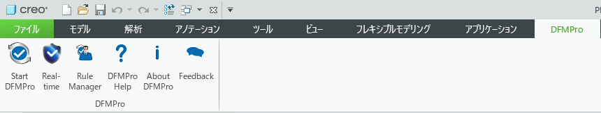
DFMPro メニューのUI
| アイコン | コマンド名 | 説明 |
|---|---|---|
|
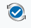 |
DFMProの開始 | DFMPro のユーザーインターフェースを起動します。 |
|
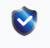 |
リアルタイム | フィーチャの作成または編集中に、DFMPro から迅速かつ即時のフィードバックや推奨事項を提供する Real-Time モードを起動します。 |
| ルールマネージャー | このコマンドを実行すると、Rule Manager ウィンドウが表示され、必要に応じてデフォルトのルールを編集することができます。 | |
| DFMPro ヘルプ | コンテキストに応じたヘルプファイルを表示します。 | |
| DFMProについて | DFMPro - About ダイアログボックスには、バージョン、ビルド番号、ビルド日などの詳細情報が表示されます。 | |
| Feedback | サポートチームへ直接フィードバックメールを送信します。 (dfmpro.support@hcl-software.com). |
すると、DFMPro Rule Manager ウィンドウが表示されます。
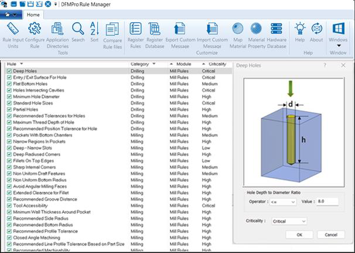
Rule Manager ウィンドウ
リストから目的のルールを ダブルクリックすると仕様を変更できます。 変更後、[OK] ボタンをクリックして保存します。
または
リストからルールを選択し、[Configure Rule] ボタンをクリックして ルール設定ダイアログを開き、変更を適用することもできます。
注意：起動時に Samples ルールファイルが空の場合、ConfigModule.ini ファイルが空であることを意味します。 このファイルは以下の場所にあります。
C:\ProgramData\GeometricLtd\DFMPro\wildfire\Settings\ConfigModule.ini
ファイルの内容を保持するには、Rule Manager を再起動する必要があります。 また、モジュールの読み込み状態を保存しファイルを変更するには、ユーザーに読み取りおよび書き込みの権限が必要です。 ユーザーに書き込み権限がない場合は、管理者が正しいファイルに置き換えることで対応できます。
| アイコン | コマンド名 | 説明 |
|---|---|---|
| New | 既存のルールファイルに新しいルールを追加します。 | |
| Open | ルールファイルが最後に保存された既定の場所を開きます。 | |
| Save | ルールファイルの変更内容を保存します。 | |
| Save As | ルールファイルを別の場所または別名で保存します。 | |
| Rule Input Units | ルール編集時に使用する入力長さおよび角度の単位を設定するダイアログを開きます。 | |
| Configure Rule | 変更を適用するための特定のルールファイル設定ダイアログを開きます。 | |
| Application Directories | データベースを変更するために使用されます。 | |
| Search | リストから特定のルールを検索するために使用されます。 | |
| Sort | 列をアルファベット順に並べ替え、上下矢印を使用して優先順位を設定します。 | |
| Compare Rule Files | 2つの異なるルールファイルを比較し、それらの違いを確認します。 | |
| Register Rules | 解析で使用するルールの種類をカスタマイズするために使用されます。 | |
| Register Database | 既存の登録済みデータベースモジュールを削除し、現在のデータベースまたは新しいデータベースを読み込みます。 | |
| Map Material | 材料と製造プロセスの対応付けを行う「Map Material to Manufacturing Process」ダイアログを開き、データベースの更新を支援します。 | |
| Material Property | 材料密度や被削性などの材料特性を表示するダイアログを開きます。 | |
| Export Custom Message | Help_ID、ルール名、ルールカテゴリ、カスタムメッセージ列などの情報を含むExcelファイルをエクスポートします。 | |
| Import Custom Message | Help_ID、ルール名、ルールカテゴリ、カスタムメッセージ列などの情報を含むExcelファイルをインポートします。 | |
| Hardware Database | 締結部品データベースを追加・編集・削除できるHardware Databaseダイアログを開きます。 | |
| Cutter Database | カッターデータを追加・編集・インポート・エクスポートできるCutter Databaseダイアログを開きます。 | |
| Help | コンテキストベースのヘルプファイルを表示します。 | |
| About | Rule Manager に関する情報を表示します。 | |
| Windows | 利用可能な一覧から表示するルールファイルウィンドウを選択します。 |
Rule Manager ウィンドウで [Sort] ボタンをクリックすると、[Sort Order] ダイアログボックスが表示されます。 このダイアログでは、各列をアルファベット順に並び替えることができます。また、上矢印（Up）および下矢印（Down）を使用して、Rule（ルール）、Category（カテゴリ）、Module（モジュール） 、Criticality（重要度）、Custom Message（カスタムメッセージ）項目の優先順位を設定することが可能です。
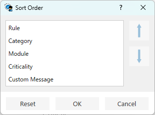
Rule Manager を開いた状態で、ルール一覧を表示するためにルールファイルを選択します。
Rule Manager ウィンドウの [Sort] ボタンをクリックすると、[Sort Order] ダイアログボックスが表示されます。
ヘッダー名をクリックすると、その列をアルファベット順（A-Z）で並び替えることができます。
同じヘッダー名をもう一度クリックすると、並び順が逆（Z-A）になります。
別のヘッダー名をクリックすると、その列をアルファベット順に並び替えることができます。同じヘッダー名を再度クリックすると、並び順が逆になります。
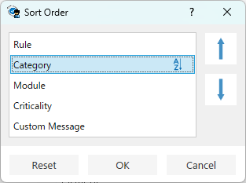
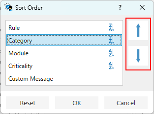
必要な並び替えオプションをすべて設定したら、[OK] ボタンをクリックしてダイアログボックスを閉じ、ルールファイルに並び替えを適用します。
DFMPro は、Sort Order ダイアログボックスで指定した並び替えオプション（A-Z / Z-A）および優先順位に基づいて、ルールの一覧を並び替えます。
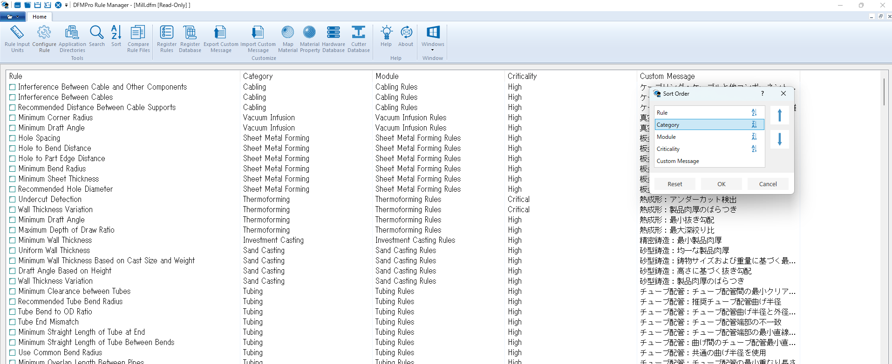
コメントが追加されていない場合は、空欄のフィールド。
特殊文字（$, *, +, # など）で始まるコメント。
数字で始まるコメント。
大文字で始まる単語のコメント。
小文字で始まる単語のコメント。
同じヘッダー名を Sort Order ダイアログボックスでクリックすると、並び替え順が逆（Z-A）になります。
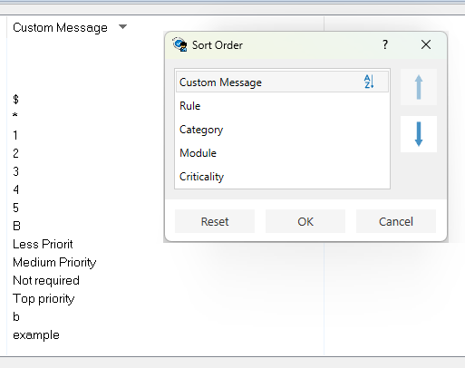
注記:ルールファイルに並び替えが適用されると、その並び替え順は 同じ Rule Manager セッション中に記憶されます。ユーザーがルールファイルを開く、作成する、または切り替えた場合でも、アクティブなルールファイルは定義された並び替え順に従って表示されます。
[Reset] ボタンをクリックすると、初期状態にリセットされます。
並び替えが正常に適用された後、ユーザーが再度 [Sort] ボタンをクリックすると、Sort Order ダイアログボックスが再び表示され、以前に設定された並び替え順が表示されます。
ユーザーは、以前に設定された並び替え順を編集し、[OK] ボタンをクリックすることで再度並び替えを実行できます。
Rule Manager ウィンドウで [Compare Rule Files] ボタンをクリックすると、Compare Rule Files ダイアログボックスが表示されます。このダイアログボックスでは、2つの異なるルールファイルを比較し、次のような差異を確認することができます。
ファイル内で選択されているルールの違い
設定された値の違い
ルールの重要度（Criticality）の違い
コメントメッセージのテキストおよび説明の違い
Rule Manager ウィンドウを開き、ルールファイルを選択します。
[Compare Rule Files] ボタンをクリックすると、Compare Rule Files ダイアログボックスが表示されます。
Original Rule File および Modified Rule File の各オプションで、ドロップダウンメニューから比較するルールファイルを選択できます。
[Browse] ボタンを使用して、必要なルールファイルを参照して選択することもできます。
[Compare Rule Files] ボタンをクリックする前にルールファイルが開かれている場合、そのファイルは Compare Rule Files ダイアログボックス内の Original Rule File として自動的に読み込まれます。その後、ドロップダウンメニューから別のルールファイルを選択して比較することができます。
注記: 最近開いた 最大10件のルールファイルが、ドロップダウンメニューから選択できるよう表示されます。
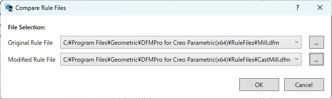
両方のルールファイルを選択した後、[OK] ボタンをクリックします。
Rule Manager の上部バーに、比較対象となるルールファイルの名前が表示されます。
選択したルールファイル間の差異を識別するため、Rule Manager には次の変更が表示されます。
ルール選択のチェックボックスが強調表示されます。
ルール名、ルールの重要度（Rule criticality）、およびカスタムメッセージが黄色で強調表示されます。
Description フィールドには、選択されたルールファイル間の差異の件数が表示されます。
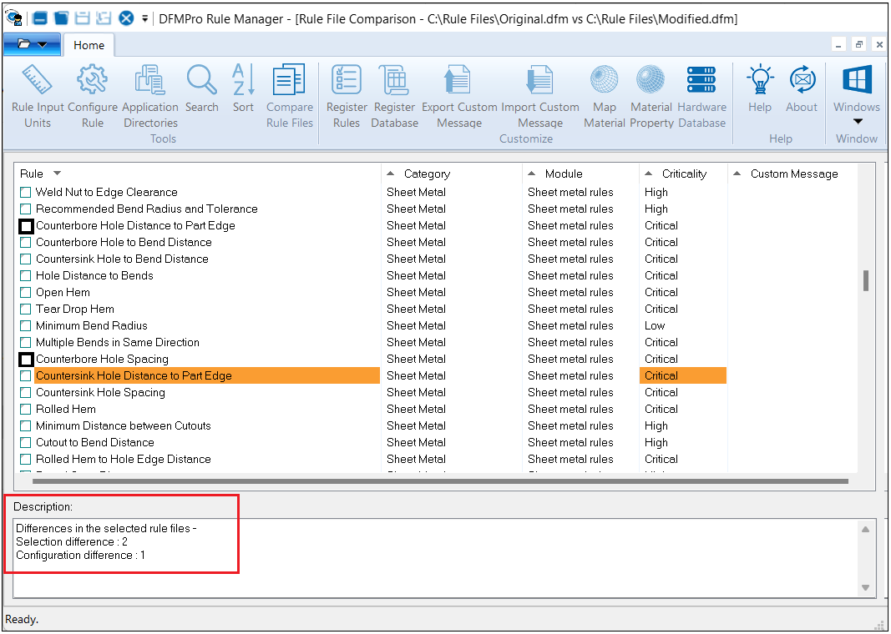
ユーザーが [Register Rules Module] ボタンをクリックすると、Register Rule Module ダイアログボックスが表示されます。 このダイアログボックスでは、ユーザーが解析したいルールタイプをカスタマイズすることができます。 ルールはカテゴリごとに分類され、それぞれ異なるモジュールファイルとして保存されます。
例えば、ミル加工（Mill）のパーツのみを解析する場合、他のモジュールを除外することが可能です。
DFMPro では、次のルールモジュールが利用可能です。
Additive Manufacturing（積層造形）
Assembly（組立）
Casting（鋳造）
Die Casting（ダイカスト）
Investment Casting（インベストメント鋳造）
Mill（ミル加工）
Sand Casting（砂型鋳造）
Sheet Metal（板金）
Sheet Metal Forming（板金成形）
Thermoforming（熱成形）
Tolerance（公差）
Tubing（チューブ加工）
Turn（旋盤加工）
Vacuum Infusion（真空含浸成形）
Welding（溶接）
カスタムモジュールファイルを読み込むには、[Browse] ボタンをクリックしてファイルの場所を参照します。目的のモジュールファイルを選択し、[Load] ボタンをクリックします。
未読み込みモジュール一覧にあるすべてのモジュールを読み込むには、[Load All] ボタンをクリックします。
未読み込みモジュールの中から 1つのモジュールのみを読み込む場合は、[Load] ボタンをクリックするか、モジュールをダブルクリックして読み込みます。
すべてのモジュールを削除するには、[Remove All] ボタンをクリックします。
読み込み済みモジュールから 1つのモジュールのみを削除する場合は、読み込み済みモジュール一覧で該当モジュールをダブルクリックするか、[Remove] ボタンをクリックします。
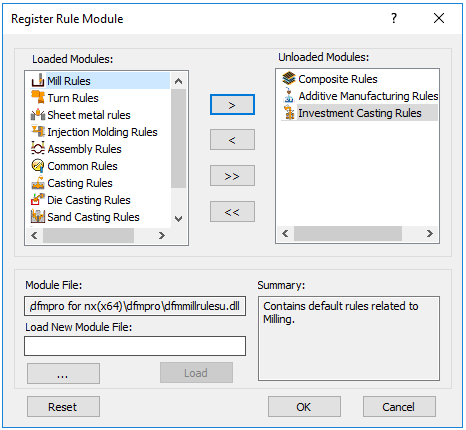
DFMPro には、一般的に使用される 標準的な穴径（Hole Size） を含むデフォルトのデータベースが付属しています。 ただし、このデータベースは、ユーザーの加工環境で使用されている穴径などに合わせて変更することが可能です。
また、組織によっては、異なるスキーマや形式（例：Access データベース）を持つ独自のデータベースを使用している場合があります。
このような場合、ユーザーのデータベースの情報をデフォルトのデータベースにコピーする代わりに、ユーザーのデータベースへアクセスするアプリケーションを指定することができます。
コネクタプログラムを作成し、DLL としてコンパイルした後、その DLL を DFMPro に登録します。
DFMPro メニューから [Rule Manager] ボタンをクリックします。
Rule Manager ウィンドウで [Register Database] ボタンをクリックします。
このダイアログボックスでは、次の操作を行うことができます。
- 既に登録されているデータベースモジュールの削除
- 現在のデータベースモジュールの読み込み
- 新しいデータベースモジュールの読み込み
ユーザーが [Map Material] ボタンをクリックすると、Map Material to Manufacturing Process ダイアログボックスが表示されます。 このダイアログボックスは、データベースを更新するために使用されます。
DFMPro for Creo Parametric 6.1 以降では、Rule Manager ウィンドウに新しい [Map Material] ボタンが追加されています。 Map Material to Manufacturing Process ダイアログボックスには、材料（Material）およびグレード（Grade）に対応する製造プロセス（Process）の一覧が表示されます。
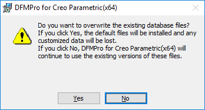
インストール時の警告メッセージの表示
DFMPro for Creo Parametric のインストール中に、既存のデータベースファイルを上書きするかどうか確認するメッセージが表示されます。 このとき [Yes] ボタンを選択して既存のデータベースファイルを上書きすると、Rule Manager ウィンドウに [Map Material] ボタンが表示され、データベースへアクセスできるようになります。
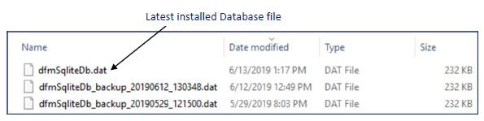
このダイアログボックスでは、材料およびグレードに対して対応する製造プロセスを選択することができます（またはその逆の設定も可能です）。 ここで選択した材料およびグレードの設定は、選択した製造プロセスに対して DFMPro ユーザーインターフェースにも反映されます。 書き込み権限を持つユーザーは、必要に応じて 列の追加・削除・編集を行うことができます。 変更後、[Update] ボタンをクリックすると、データベースに変更内容が保存されます。また、列の上にマウスカーソルを合わせると、該当するチェックボックスを表示して選択することができ、更新を行うことができます。
選択した行を削除するには、該当する行を選択して Delete ボタンをクリックします。削除対象の行は 赤色（RED） に変わります。削除処理を確定するには Update ボタンをクリックします。
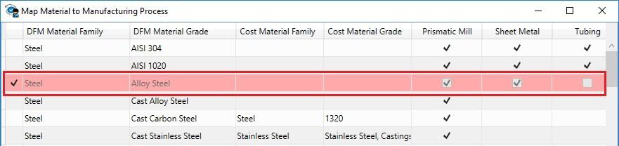
注記: データベースをカスタマイズできるのは 書き込み権限を持つユーザーのみです。 書き込み権限がないユーザーは 閲覧のみ可能です。
DFMPro for Creo Parametric のインストール時に No を選択すると、 既存のデータベースを上書きせず、そのまま既存のデータベースを使用します。
この場合、Rule Manager ウィンドウの Map Material ボタンは グレーアウト（無効状態）になります。 また、マウスカーソルを合わせると次のメッセージが表示されます。 > Either DFMPro database is not updated or opened in some other application. > （DFMPro データベースが更新されていないか、別のアプリケーションで開かれています。）
注記: この警告メッセージは 初めて使用するユーザーには適用されません。 初回ユーザーはすべての機能を利用できます。
既存ユーザーが No を選択してデータベースの上書きをキャンセルした場合は、 Cost Administration Vault アプリケーションの Edit Material Mapping オプションを使用して データベースを更新してください。詳細については Cost Administration Vault User Guide を参照してください。
ユーザーが Material Property ボタンをクリックすると、Material Property ダイアログボックスが表示されます。 このダイアログでは、Material Density（材料密度）、Material Machinability（被削性）の情報を確認できます
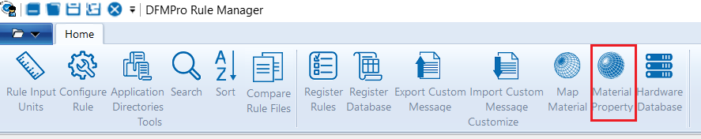
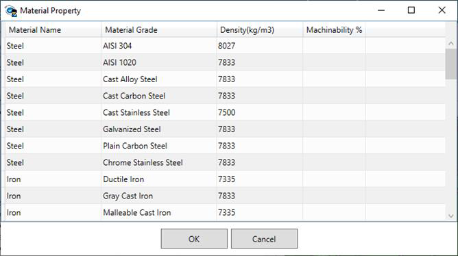
新しい材料および被削性の値を追加する、または既存の値を編集するには、次の手順に従ってください。
Rule Manager ウィンドウを開き、Map Material ボタンをクリックします。
Export ボタンをクリックすると、すべての材料とその特性が Excel シートとしてエクスポートされます。
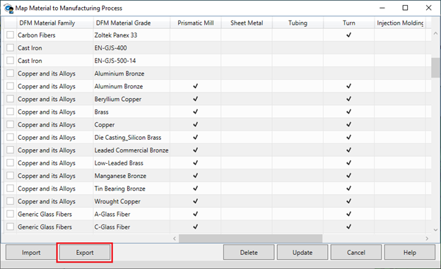
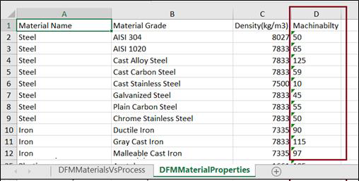
Material Property Table に追加された材料が、「Map Material to Manufacturing Process」ダイアログボックスにも登録されていることを確認してください。
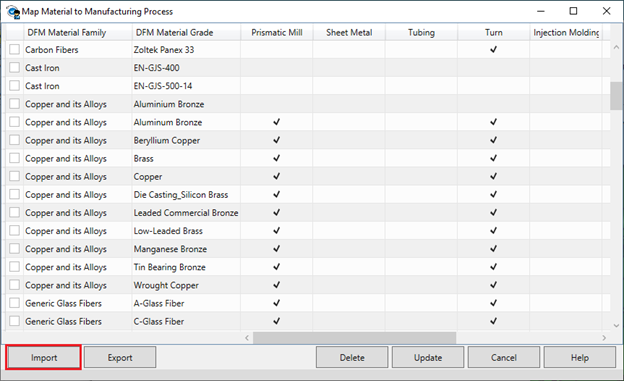
ユーザーが Rule Manager ウィンドウの Hardware Database ボタンをクリックすると、Hardware Database ダイアログボックスが表示されます。このダイアログでは、データベース内の ファスナー（締結部品）を追加・削除・編集することができます。
Rule Manager ウィンドウを開きます。
Hardware Database ボタンをクリックすると、Hardware Database ダイアログボックスが表示されます。
Hardware Name フィールドに、ファスナー名を手動で入力します。
データベース内でSize（サイズ）、Unit（単位）、Diameter（直径）、Length（長さ）、その他のパラメータのような留め具のパラメータをすべて設定すると、そのハードウェアは アセンブリルール設定で自動的に利用可能になります。
Search ボタンをクリックするか、Ctrl + F を使用すると、Hardware Database ダイアログボックス内で 特定のハードウェアタイプを素早く検索できます。 Search ダイアログが表示されている間は、Update、Import、Exportの３つのボタンは 無効になります。
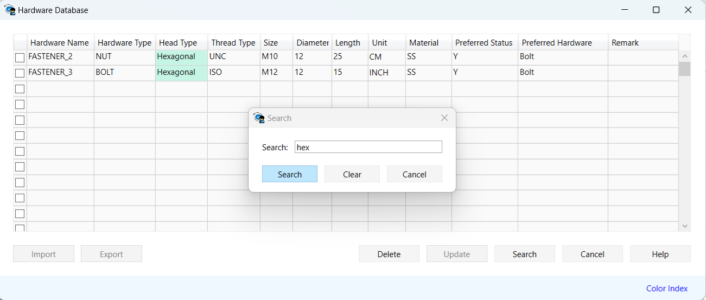
C:\ProgramData\GeometricLtd\DFMPro\DFMDataBase
新しい留め具を追加すると、この データベースファイルが更新されます。
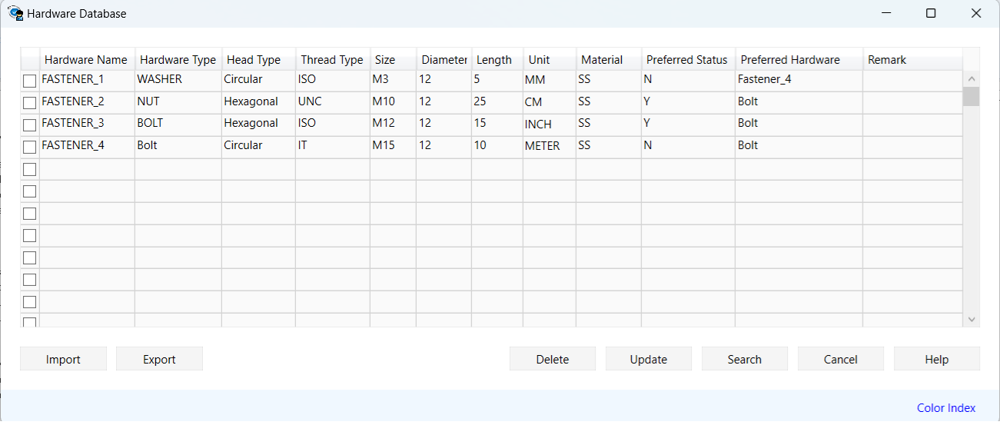
ユーザーは必要に応じて、Hardware Database（ハードウェアデータベース）の追加、編集、インポート、エクスポートを行うことができます。 また、Hardware Databaseダイアログボックスから、Excelファイルを直接インポートすることも可能です。さらに、データベースをExcelファイルとしてエクスポートすることもできます。
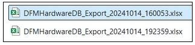
エクスポート前に重複エントリ（duplicate entries）が存在する場合、DFMProはメッセージを表示し、処理を続行するかどうかの確認を求めます。 ユーザーはデータベースを保存するために、必要な対応を行う必要があります。
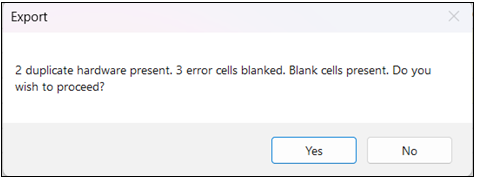
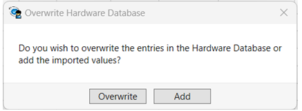
Add ボタン：ユーザーが Add ボタンを選択すると、DFMPro は既存のデータベースの後に新しいエントリを追加します。 もし 重複するデータベースエントリが存在する場合、DFMPro は重複エントリを削除するかどうかを確認するメッセージを表示します。ユーザーはどちらのオプションを選択しても処理を続行できます。
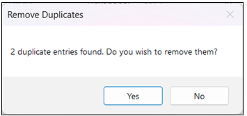
- Yes を選択した場合 重複している行は削除されます。
- No を選択した場合 インポート後、DFMPro は重複セルを紫色（Purple）、空白セルを黄色（Yellow）でハイライト表示します。ユーザーは必要に応じて対応を行い、データベースを編集する必要があります。
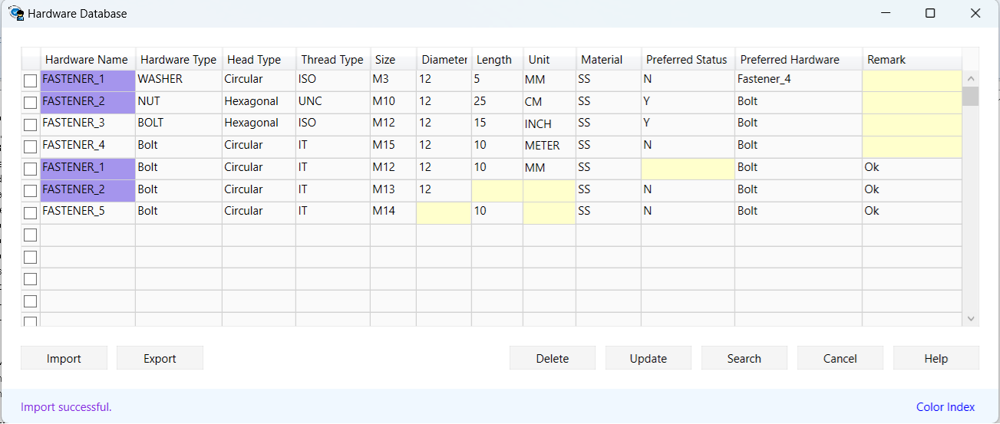
Overwrite ボタン： ユーザーが Overwrite ボタンを選択すると、既存のデータベースエントリは新しいエントリで置き換えられます。DFMPro は、Excel ファイルを選択した場所と同じ場所に、既存データベースの バックアップコピーを作成します。
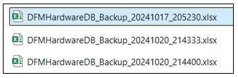
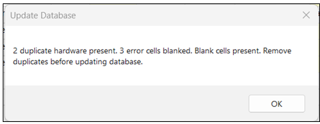
ユーザーは Delete ボタン、またはキーボードの Shift / Ctrl コマンドを使用して、単一または複数のハードウェアタイプを同時に削除することができます。
削除したいハードウェアタイプの横にある チェックボックスを選択し、Delete ボタンをクリックします。 また、キーボードの Delete キーを使用して削除することもできます。
該当する行が 赤色（RED）に変わり、Hardware Database ダイアログボックスの下部に確認メッセージが表示されます。
表示された警告メッセージで、削除処理を完了するために Update または OK を必要に応じて選択します。
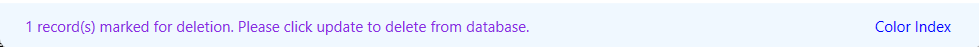
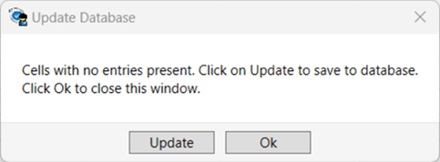
削除を行いたくない場合は、OK ボタンをクリックして警告メッセージを閉じます。削除する前に、任意の行を再度 選択／解除することができます。
選択したハードウェアタイプを削除する場合は、Update ボタンをクリックします。すると、選択したハードウェアタイプが ハードウェアデータベース一覧から削除されます。
リスト内の任意のハードウェアタイプを個別に選択する場合は、キーボードの Ctrl キーを押しながら、テーブル内の該当するハードウェアタイプの チェックボックスを選択します。
連続した複数のハードウェアタイプを選択する場合は、キーボードの Shift キーを押しながら、最初と最後のハードウェアタイプの チェックボックスを選択すると、その間のすべてのエントリが選択されます。
例えば、10件のエントリのうち 1～5のみを削除したい場合、キーボードの Shift キーを押しながら、最初のハードウェアタイプと6番目のハードウェアタイプを選択します。 この操作により、それらの間にある すべてのハードウェアタイプのエントリが選択されます。
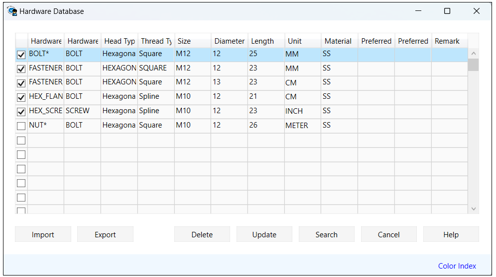
すべてのエントリを選択する場合は、キーボードの Ctrl + A を使用します。
Delete ボタンをクリックします。また、キーボードの Delete キーを使用して削除することもできます。
該当する行が 赤色（RED）に変わり、Hardware Database ダイアログボックスの下部に確認メッセージが表示されます。
表示された警告メッセージで、削除処理を完了するために Update または OK を必要に応じて選択します。
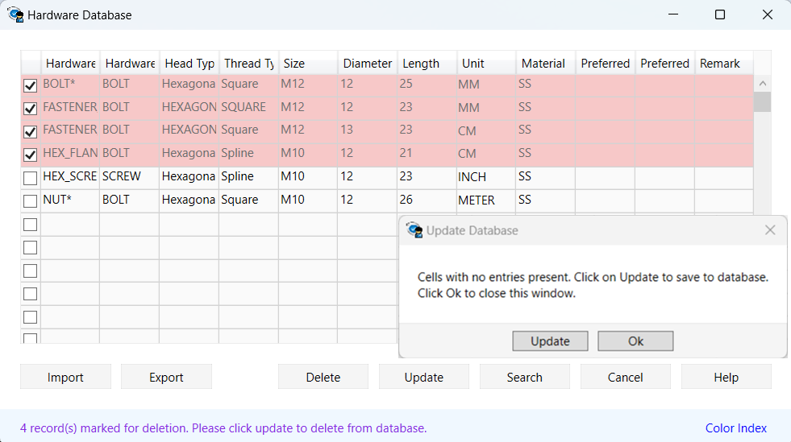
選択したリストから ハードウェアタイプを削除したくない場合は、OK ボタンをクリックして警告メッセージを閉じます。 削除を実行する前に、ユーザーは任意の行を 再度選択または選択解除することができます。
選択したハードウェアタイプを削除する場合は、Update ボタンをクリックします。 選択されたハードウェアタイプは ハードウェアデータベースのリストから削除されます。
Rule Manager ウィンドウの Cutter Database ボタンをクリックすると、Cutter Database ダイアログボックスが表示されます。 このダイアログボックスでは、データベース内のカッターデータを 追加・編集・インポート・エクスポートすることができます。
ユーザーは、必要なカッターデータを含む スプレッドシートを作成し、Cutter Database ダイアログボックスに直接インポートすることができます。 また、カッターデータを スプレッドシート形式でエクスポートすることも可能です。
注記：データベースを更新するには 書き込み権限（Writing access）が必要です。
DFMPro for Creo Parametric v13.0 から、Rule Manager ウィンドウに 新しい Cutter Database ボタンが追加されました。
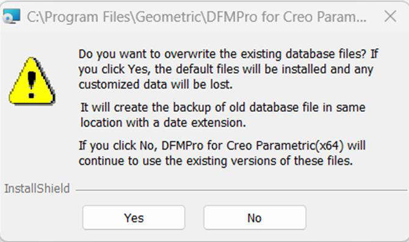
インストール時に警告メッセージの表示
DFMPro for Creo Parametric のインストール中、ユーザーが 既存のデータベースファイルを上書きするために「Yes」ボタンを選択した場合、Rule Manager ウィンドウに 新しい Cutter Database ボタンが表示され、データベースへアクセスできるようになります。
以下の手順に従って、必要なカッターデータのインポートおよびエクスポート方法を確認してください。
Rule Manager ウィンドウで Cutter Database タブをクリックし、Cutter Database ダイアログボックスを開きます。
ユーザーは、以下の各種カッターに対して データの追加・削除・編集を行うことができます。
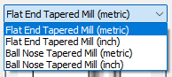
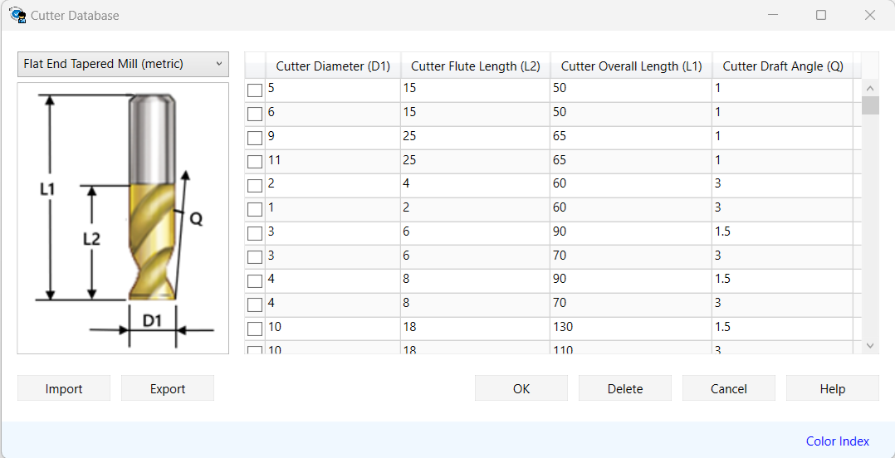
単一の行を削除する場合：削除したいカッタータイプの横にある チェックボックスを選択し、Delete ボタンをクリックします。 また、キーボードの Delete キーを使用して削除することもできます。
複数の行を削除する場合：以下のいずれかの方法で複数行を選択できます。
- リストから任意のカッタータイプを選択する場合は、キーボードの Ctrl キーを押しながら、テーブル内の対象となるカッタータイプの チェックボックスを選択します。
- 連続した複数のカッタータイプを選択する場合は、キーボードの Shift キーを押しながら、最初と最後のカッタータイプの チェックボックスを選択すると、その間にあるすべてのエントリが選択されます。
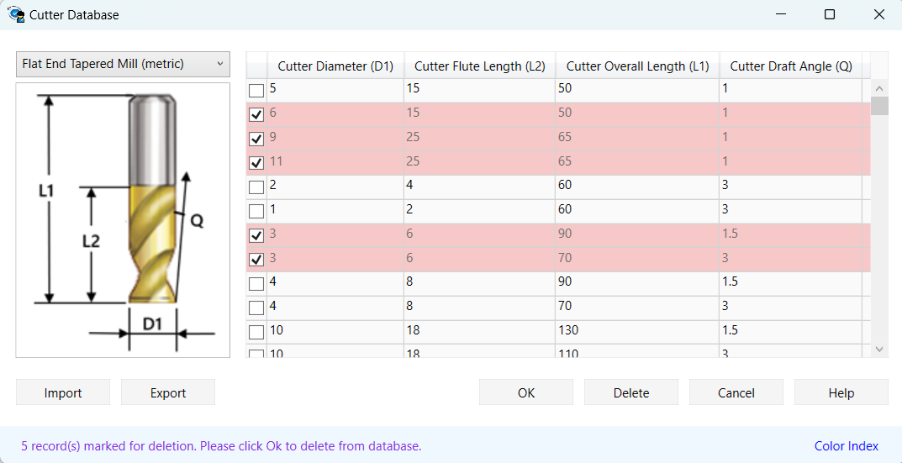
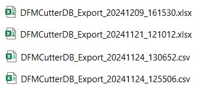
エクスポートを実行する前に、重複するエントリ（duplicate entries）が存在する場合、 DFMPro はメッセージを表示し、処理を続行するかどうかの 確認を求めます。 ユーザーは、データベースを保存するために 必要な対応を行う必要があります。
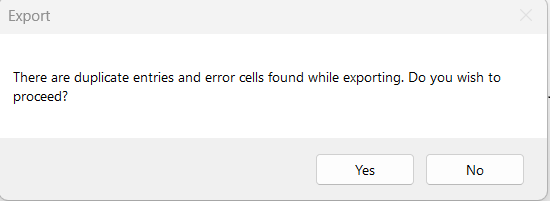
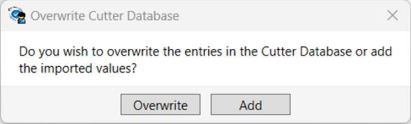
Add ボタン：ユーザーが Add ボタンを選択すると、新しいエントリは 既存のデータベースの下に追加されます。もし 重複するデータベースエントリが存在する場合、DFMPro は重複エントリを削除するかどうかを確認するメッセージを表示します。ユーザーは、データベースを更新するために 必要な対応を行う必要があります。
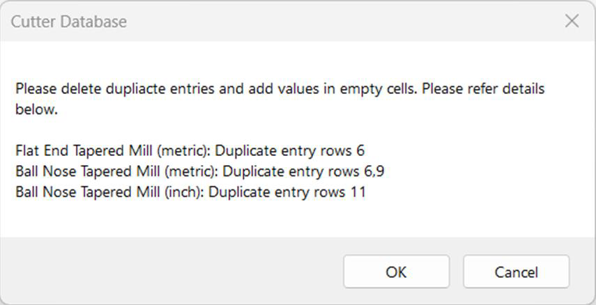
Overwrite ボタン：ユーザーが Overwrite ボタンを選択すると、既存のデータベースエントリは 新しいエントリで置き換えられます。また、DFMPro は 既存データベースのバックアップコピーを、Excel ファイルを選択した場所と同じ場所に作成します。
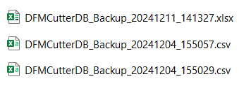
インポート後、DFMPro は重複しているセルを紫色（Purple）、エラーまたは空白のセルをオレンジ色／黄色（Orange / Yellow）でハイライト表示します。ユーザーは必要に応じて対応を行い、データベースを編集する必要があります。
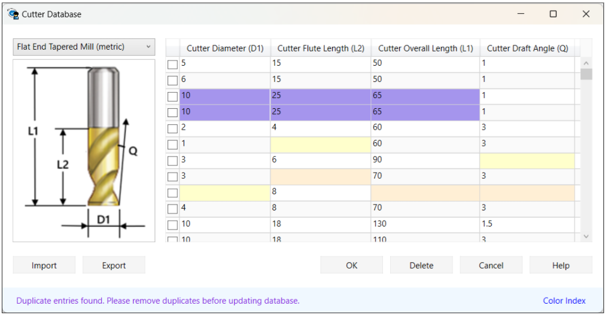
DFMPro メニューの Start DFMPro をクリックすると、DFMPro ユーザーインターフェースが表示されます。
DFMPro のインターフェースは、以下のグループに分かれています。
- Inputs
- DFX
- Cost
- DFX Server（製造プロセスとして Assembly が選択され、かつ DFMPro Settings ダイアログボックスで DFX Server 設定が有効になっている場合のみ表示されます）
DFMPro ユーザーインターフェースに表示される 機能および入力項目（以下のセクションで説明）は、すべての 製造プロセスおよび材料に対して基本的に共通です。ただし、一部の 製造プロセスや材料タイプでは、解析を完了するために 追加の入力情報が必要となる場合があります。
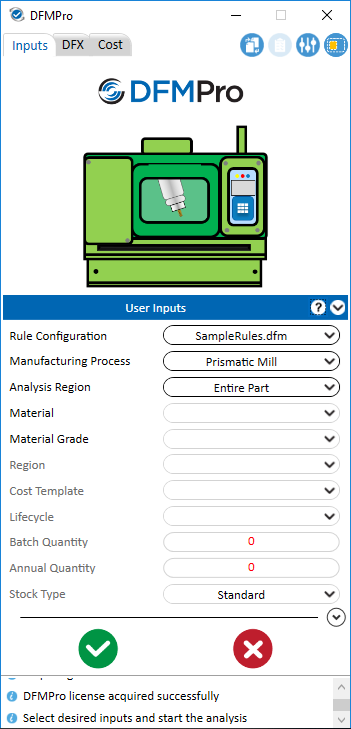
DFMPro には、事前に設定された組織固有の製造プロセスおよびルールファイルを使用して、ワンクリックで DFMPro 解析を実行できる機能が用意されています。この設定を行い Enable Profile Execution をクリックすると、ユーザーは必要な プロファイル設定（Profile Configuration）を選択できるようになります。 これにより、誤ったルールファイルや製造プロセスを選択してしまうことを防ぐことができます。
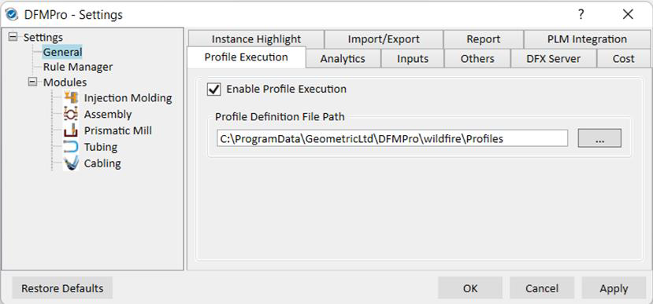
DFMPro では、Milling、Sheet Metal、Assembly 用の デフォルトプロファイル設定が提供されています。 また、同一セッション内で 異なる解析に対応した複数の事前設定済み製造プロセスを追加することも可能です。 さらに、ユーザーは必要に応じて デフォルト以外のプロファイル設定を単一または複数追加することもできます。 DFMProfile.config ファイルは、以下の場所に保存されています。
C:\ProgramData\GeometricLtd\DFMPro\wildfire\Profiles
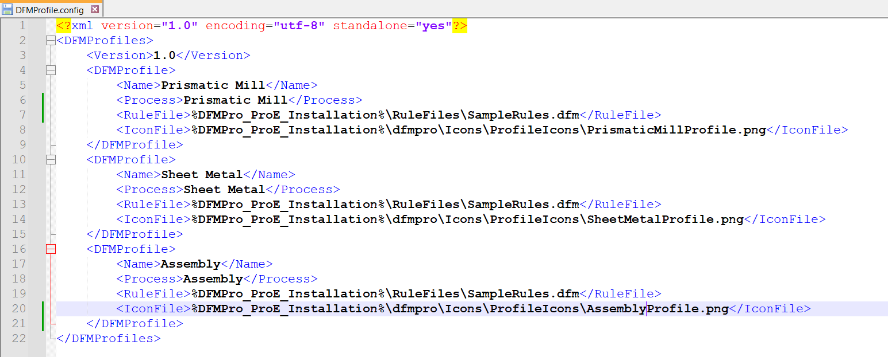
デフォルトプロファイル設定（Default Profile Configuration）
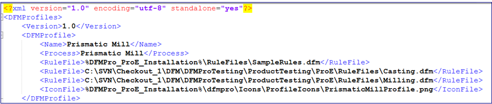
複数ルールファイル設定（Multiple Rule File Configuration）
注記：新しいプロファイルを追加する場合は、DFMPro ユーザーインターフェースの Profile タブ（上図参照）において、標準の設定フォーマットに従う必要があります。 各プロファイルに対して、必要に応じて 複数のルールファイルを設定することも可能です。 設定ファイル内で 誤ったパスやファイル名を指定しないよう注意してください。 誤った設定を行うと、エラーの原因となる可能性があります。
この設定が 選択されていない場合、DFMPro は 従来通りの通常動作で実行されます。
注記：初期状態では、DFMPro Settings ダイアログボックスのEnable Profile Execution チェックボックスはオフ（未選択）になっています。
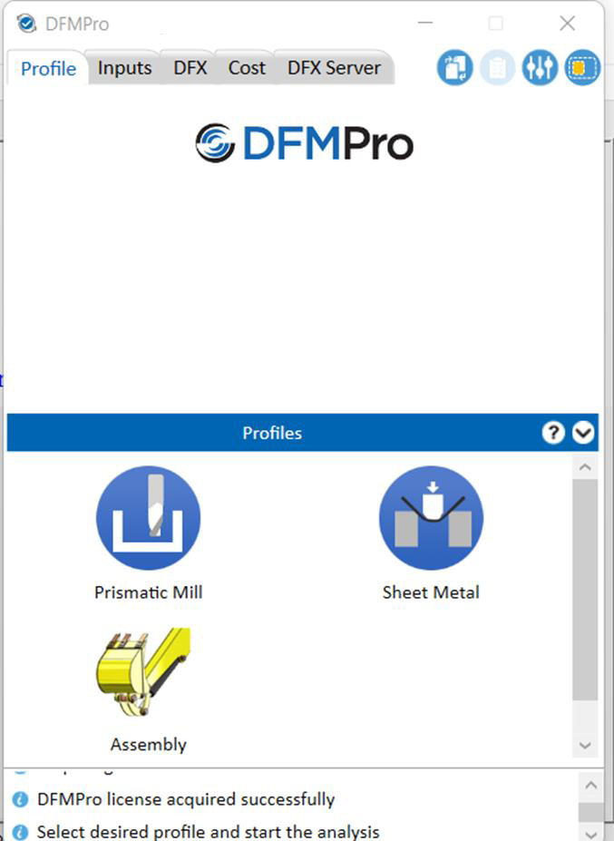
注記： 追加した ルールファイルのパスまたは名前が一致していない場合、 プロファイルを選択した際に 警告メッセージが表示され、該当するパスまたはファイル名が 正しくないことが通知されます。
例：
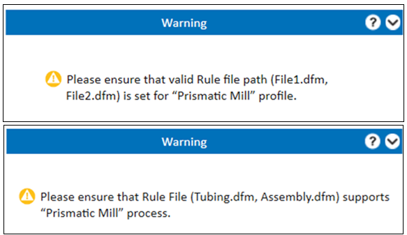
Profile タブでプロファイルを選択すると、引き抜き方向（Pulling Direction）を設定するための Entity Selection グループボックスが表示されます。
User Inputs グループボックスは グレーアウト（無効状態）になります。 組織で Profile Execution を有効にすると、User Input のドロップダウンオプションは無効化されます。 そのため、ユーザーは User Input グループボックスから解析を実行することはできません。
製造プロセス（Manufacturing Process）および ルールファイル（Rule File）は、プロファイル設定ページから自動的に読み込まれます。
これにより、組織は 自社専用の製造プロセスおよびルールファイルのみを設定して運用することが可能になります。
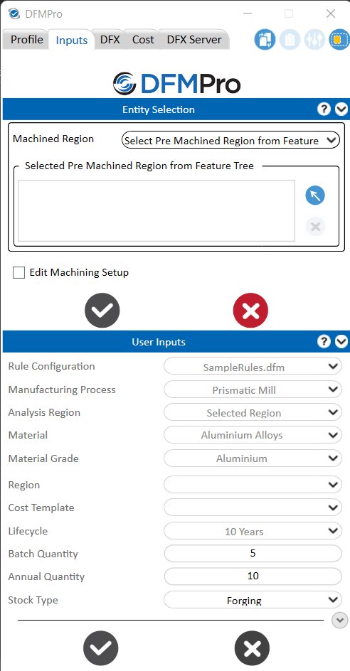
複数のルールファイルが追加されている場合、Profile タブからプロファイルを選択するとUser Inputs グループボックスが表示されます。 このグループボックスでは、Rule Configuration ドロップダウンメニューから必要なルールファイルを選択できます。
選択したルールファイルに Material Database に対応したルールが含まれている場合、Material および Material Grade のオプションが有効になり、必要な材料情報を更新できるようになります。
必要な情報を入力した後、Analyze ボタンをクリックすると、引き抜き方向（Pulling Direction）を定義するための Entity Selection グループボックスが表示されます。 また、製造プロセス（Manufacturing Process）および ルールファイル（Rule File）は、プロファイル設定ページから自動的に読み込まれます。
これにより、組織は 自社専用の製造プロセスおよびルールファイルのみを設定して運用することが可能になります。
注記：
ルールファイルで Assembly、Tubing、Cabling、Welding のルールが選択されている場合、Assembly モジュールのワークフローによるマルチプロセス解析（Multi-process analysis）がサポートされます。
モデルに 鋳造＋機械加工（Cast-Machined）領域が含まれている場合、複数製造プロセスによる解析（Analysis with Multiple Processes）がサポートされます。
ユーザーは、DFX Server 上でプロファイル実行（Profile Execution）を使用して DFMPro 解析を実行することができます。 DFMPro Settings でAllow server analysis、Assembly Preselection Optionのオプションが有効になっている場合、DFMPro は解析実行時に Server と Local の選択肢を表示します。
アセンブリドキュメントを開き、DFMPro メニューをクリックします。
DFMPro メニューの Start DFMPro をクリックして、ユーザーインターフェースを開きます。
Profile タブから Assembly を選択して、DFMPro 解析を実行します。
- Local を選択した場合 → 解析は ローカルマシンで実行されます。
- Server を選択した場合 → 解析は DFX Server 上で実行されます。
Entire Assembly を選択した場合 → 解析は アセンブリ全体に対して実行されます。
Pre-Selected Components を選択した場合 → 解析は 選択したコンポーネント／サブアセンブリに対して実行されます。
Analyze ボタンをクリックすると、必要なコンポーネントまたはサブアセンブリを選択するためのComponent Selection グループボックスが表示されます。
このセクションでは、User Inputs グループボックスで利用できるコマンドについて説明します。
DFMPro メニューの Start DFMPro をクリックして、DFMPro ユーザーインターフェースを開きます。
User Inputs グループボックスでは、ユーザーは必要に応じて 入力値の追加や変更を行うことができます。
注記：以下で説明する Region 以降の入力項目は、コスト計算のために必要な情報です。 これらの入力値はすべて 部品コストの計算に使用されます。 ただし、DFMPro for Creo Parametric の解析実行に必要なのは、Manufacturing Process（製造プロセス） と Material（材料） の入力のみです。
Inputs グループでは、DFMPro for Creo Parametric
は Rule Configuration
を参照することができます。（例：SampleRules_1.dfm）
Manufacturing Process の横にある ドロップダウンリストをクリックし、適切な製造プロセスを選択します。
DFMPro を実行する前に、DFMPro は 設計者に必要な提案や対応事項をユーザーインターフェースの 下部に表示します。
このグループボックスでは、ユーザーは 必要に応じて各種入力値を設定することができます。
注記：
ルールファイルで選択されているルールに基づき、対応する 製造プロセス（Manufacturing Process）のみが実行可能となり、その他の製造プロセスは 無効（選択不可）になります。
ルールファイルで General Rule（汎用ルール）が選択されている場合は、すべての製造プロセスを実行することが可能になります。
製造プロセスおよびその詳細設定については、「Additional settings required for the Analysis」セクションを参照してください。
- Entire Part：このオプションを選択すると、DFMPro のルールチェックは パーツ全体に対して実行されます。
- Selected Region：このオプションを選択すると、DFMPro のルールチェックは パーツの選択された領域に対して実行されます。
注記： Analysis Region フィールドは、Manufacturing Process として「Prismatic Mill」が選択された場合にのみ表示されます。
- Top-level：このオプションを選択すると、トップレベルのコンポーネントに対して解析が実行されます。
- All-level：このオプションを選択すると、アセンブリ全体に対して解析が実行されます。
Material（材料）：ドロップダウンリストから 適切な材料を選択します。
Material Grade（材料グレード）：ドロップダウンリストから 適切な材料グレードを選択します。
Region（地域）：製造施設の所在地をドロップダウンリストから選択します。対応地域はUS、Europe、China、India
Cost Template（コストテンプレート）：レポート用の 適切なテンプレートをドロップダウンリストから選択します。DFMPro for Creo Parametric では、ドロップダウンリストから 任意のテンプレートを選択することができます。また、Cost Administration Vault を通じてテンプレートを 追加または変更することも可能です。
注記： コストライセンスがある場合のみ Cost Template が表示されます。ライセンスがない場合、このオプションは 無効（選択不可）になります。
Lifecycle（ライフサイクル）：コスト評価に使用する 対象パーツのライフサイクル（年数）をドロップダウンリストから選択します。
Number of Cavities（キャビティ数）：デフォルトでは 1 が表示されます。必要に応じて、ドロップダウンリストから キャビティ数を選択します。
- Automatic：入力された情報に基づき、工具コストが自動計算されます。
- Manual：ユーザーが 工具コストを手動で入力することができます。
Batch Quantity（バッチ数量）：1バッチで 製造される部品の数量を入力します。
Annual Quantity（年間数量）：年間で製造される部品の数量を入力します。
注記： Region 以降の入力項目は、コスト計算のために必要な入力値です。 これらの入力はすべて 部品コストの計算に使用されます。 ただし、DFMPro for Creo Parametric の解析実行に必要なのは Manufacturing Process と Material の入力のみです。
ドロップダウンリストで Custom を選択した場合は、必要な数量を入力してください。
注記：
入力値は 12 を超えることはできません。12 を超える値を入力した場合、DFMPro は 最大 12 として処理します。
数値以外の値を入力した場合、DFMPro は解析を実行できません。その場合、入力された変数は 赤色（RED）で表示されます。
Default、Water Jet、Laser、Plasma Cuttingの 4 種類の切断プロセスがあります。
デフォルトでは Water Jet が設定されています。 必要な切断プロセスをドロップダウンリストから選択します。
- Entire Assembly :このオプションを選択すると、DFMPro のルールチェックは アセンブリ全体に対して実行されます。
- Pre-Selected Components：このオプションを選択すると、DFMPro のルールチェックは 選択されたコンポーネントに対して実行されます。
Sub Process のデフォルト設定は Default です。 必要に応じて、ドロップダウンリストからサブプロセスを選択してください。 DFMPro は、選択された内容に基づき Additive Manufacturing および該当するサブプロセスのルールを解析します。
Analyze ボタン → DFMPro の解析を実行します。
Cancel ボタン → DFMPro の解析をキャンセルします。
このセクションでは、DFMPro の解析を実行するために必要な製造プロセスの種類と、それぞれの追加設定について説明します。
- Entire Part：ドロップダウンリストからこのオプションを選択すると、パーツ全体に対して DFMPro ルールが実行されます。
- Selected Region：ドロップダウンリストからこのオプションを選択すると、選択された領域に対して DFMPro ルールが実行されます。
Selected Region を選択した状態で Analyze ボタンをクリックすると、Entity Selection ダイアログボックスが表示されます。
このダイアログボックスでは、Machining Region の項目において、ドロップダウンリストから以下の 3つのオプションを選択できます。
Select Pre-Machined Region from Feature Tree
Select Machined Faces based on Color
Select Machined Features from Feature Tree
Select Pre-Machined Region from Feature Tree を選択すると、DFMPro for Creo Parametric は Creo のモデルツリーから 事前加工領域（Pre-Machined Region） （最後の粗加工フィーチャー：last rough feature）を自動的に選択します。以前の粗加工フィーチャーの後に追加されたフィーチャーは、加工フィーチャー（Machined Features）として扱われます。
DFMPro のルール実行は、これらの加工フィーチャーに対してのみ行われます。
CAD ファイルに 色によって区別された加工面（Machined Faces）が設定されている場合、組織の標準に基づいて CAD パーツの面を色で指定します。 その後、DFMPro for Creo Parametric は 選択された色に関連するフィーチャーを自動的に識別します。 これらのフィーチャーは DFMPro 解析の対象として検証されます。
上図の例では、黄色の面がすべて加工面（Machined Faces）として定義されており、それに関連する 加工フィーチャーの一覧が表示されています。
Select Machined Features from Feature Tree を選択すると、Creo のフィーチャーツリーから加工フィーチャーを選択できます。 選択されたフィーチャーは、Milling ルールに基づいて検証されます。
注記： PMI ベースのルールを除き、すべての Milling ルールおよび 以下の Common ルールがサポートされています。
ドロップダウンリストから Stock Type（素材タイプ）を選択するか、素材数（Stock の数）を指定します。
Stock Type のドロップダウンリストをクリックすると、5種類の Stock Type** が表示されます。
初めて使用する場合は、Standard が デフォルト設定として選択されています。 別の Stock Type を設定した場合、その選択内容が 新しいデフォルトとして設定され、解析に使用されます。
必要に応じて別の Stock Type を選択し、DFMPro 解析を実行します。
ドロップダウンリストから Custom を選択した場合は、必要な数量を入力します。
注記：：入力できる数量は 最大 12 までです。12 を超える値を入力した場合、DFMPro は 12 として処理します。数値以外の値を入力した場合、DFMPro は解析を実行できません。その場合、入力された変数は 赤色（Red）で表示されます。
Sand Casting（砂型鋳造）の製造プロセスでは、パーツの引き抜き方向（Pull Direction）とパーティング面（Parting Plane）を指定する必要があります。
その後、Entity Selection ダイアログボックスでパーツの引き抜き方向（Pull Direction）を定義します。
Parting Plane ダイアログボックスの表示されます。
Creo Parametric のグラフィックスエリアからパーティング面／平面を選択
この面の分類に基づき、DFMPro for Creo Parametric のルール検証が行われます。
Assembly（アセンブリ）では、DFMPro により、アセンブリ全体または 選択したコンポーネント／サブアセンブリに対して解析を実行できます。
Pre-Selected Components オプションは、DFMPro Settings で「Assembly Preselection Option」が有効になっている場合のみ、ドロップダウンリストに表示されます。 この設定が無効の場合は、Entire Assembly のみが選択可能になります。
Assembly Analysis を Entire Assembly または Pre-Selected Components のいずれかに設定し、Analyze ボタンをクリックすると解析が実行されます。
Entire Assembly：ドロップダウンリストからこのオプションを選択すると、アセンブリ全体に対して解析が実行されます。
Pre-Selected Components：ドロップダウンリストからこのオプションを選択し、Analyze ボタンをクリックすると、Component Selection グループボックスが表示され、解析対象となるコンポーネント／サブアセンブリを選択できます。
解析を実行するために、Component Selection グループボックスから単一または複数のコンポーネント／サブアセンブリを選択できます。
DFMPro は Creo Model Tree に基づいてコンポーネントの一覧を生成します。 Component Selection グループボックスに表示されるリストから必要なコンポーネントを選択してください。 選択されたコンポーネントは、Creo のグラフィックス画面でハイライト表示されます。 選択した コンポーネント／サブアセンブリの解析を実行するには、Analyze ボタンをクリックします。
Select Components from Graphics or Model Tree ボタンをクリックすると、グラフィックスエリアおよび Model Treeでの選択モードが有効になります。
必要に応じて、グラフィックスエリアから単一または複数のコンポーネントを選択します。 また、グラフィックスエリアで ウィンドウ選択を使用して複数のコンポーネントを選択することも可能です。
または
Model Treeから必要なコンポーネントを選択します。
必要なコンポーネントを選択した後、Select ダイアログボックスの OK ボタン、または マウスの中ボタンをクリックして選択モードを終了し、選択内容を確定します。 その後、Analyze ボタンをクリックすると、選択した コンポーネント／サブアセンブリに対して解析が実行されます。
View all selected components： Show All Selected Components ボタンをクリックすると、選択されたすべてのコンポーネントが グラフィックスエリアでハイライト表示され、確認および検証ができます。
Cost タブの Components Cost View グループボックスでは、DFMPro は 解析が実行された選択コンポーネントのみについて、Quantity（数量）、Unit Cost（単価）の情報を表示します。
DFMPro では、同一セッション内で保存されたアセンブリに対して、再度コンポーネントを選択する手順を繰り返すことなく、解析を再実行することができます。
DFMPro の解析レポートでは、Assembly Analysis の選択内容が表示されます。
Manufacturing Process として「Assembly」を選択すると、アセンブリ固有のチェック（Assembly-specific checks）を実行できます。 この場合、Assembly、Cabling、Welding、Tubingのモジュールに関連する アセンブリ用ルールが実行されます。
例えば、Tubing モジュールのルールである「Minimum Clearance Between Tubes（チューブ間の最小クリアランス）」は実行されます。 一方で、パーツ固有のルール（例：Recommended Tube Bend Radius（推奨チューブ曲げ半径））は実行されません。
注記：：上記の マルチプロセス解析では、パーツ固有のルール（Part-specific rules）は実行できません。
設計者のワークステーションでは、CAD を含む複数のソフトウェアが同時に実行されていることが多く、非常に複雑なアセンブリを解析することは容易ではありません。 ギガバイト級の大規模アセンブリを詳細に解析する場合、処理に数時間かかることもあります。 そのため、設計者は 解析が完了するまで CAD 設計作業を続けられない場合があります。 DFX Server Solution では、新しい機能として サーバー側で解析を実行するオプションが提供されています。 この機能は DFMPro Settings から有効化することができます。
自身のシステムリソースを解放し、高性能サーバーマシンで解析を実行できる
サーバーで解析を実行した後、DFMPro および Creo Parametric セッションを終了できる
DFMPro for Creo Parametric の「DFX Server」タブから解析の進行状況を確認できる
サーバー解析完了後、DFMPro for Creo Parametric 内で結果を確認できる（ローカルで解析を実行した場合と同様に表示されます）
Manufacturing Process として「Assembly」が選択され、DFMPro Settings ダイアログボックスで「Allow server analysis」オプションが有効になっている場合、Analysis Run Type として Server と Local の選択肢が表示されます。
Local を選択した場合 → 解析は ローカルマシンで実行されます。
Server を選択した場合 → 解析は DFX Server 上で実行されます。
解析リクエストが正常に送信されると、DFMPro の解析はサーバー上で実行されます。 ユーザーは、DFX Server タブから送信した解析リクエストの状態（ステータス）を確認できます。
デフォルトでは、DFMPro for Creo Parametric がパーツ形状から 引き抜き方向（Pulling Direction）を自動的に設定します。 ただし、ユーザーは必要に応じて 引き抜き方向を変更することができます。
必要な方向を選択すると、選択した 引き抜き方向の ID が Entity Selection グループボックスに表示されます。
パーツ形状が複雑な場合、アンダーカットやサイドアクションの製造に対応するため、二次引き抜き方向（Secondary Pulling Direction）を設定することもできます。
注記： Inputs タブで選択された製造プロセスに応じて、Entity Selection グループボックスの項目やレイアウトは変更されます。 以下はその一例です。
Thermoforming プロセスにおける Entity Selection グループボックスの例
Casting、Die Casting、Injection Molding プロセス用のEntity Selection グループボックス
Vacuum Infusion プロセス用のEntity Selection グループボックス
Sand Casting プロセス用のEntity Selection グループボックス
Additive Manufacturing プロセス用のEntity Selection グループボックス
Turn（旋削）プロセス用のEntity Selection グループボックス
注記： Entity Selection ダイアログボックスは、Investment Casting（精密鋳造）、Prismatic Mill（プリズマティック加工）、Tubing（チューブ加工）の製造プロセスには 適用されません。
すると、Entity Selection ダイアログボックスが表示されます。
注記：：User Inputs グループボックスで Stock Type が Standard に設定されており、かつ Cost ライセンスが有効な場合のみ、Stock Shape（素材形状）および Direction（方向）を指定するためのEntity Selection グループボックスが表示されます。
- Automatic：矩形素材（Rectangle）と 丸材（Round）を比較し、最適な原材料素材形状を自動的に選択します。
- Rectangle：矩形素材（Rectangle Stock）を前提として、原材料サイズを計算します。
- Round：丸材（Round Stock）を前提として、原材料サイズを計算します。
DFMPro は、解析対象のパーツのすべての面を自動的にCore（コア側）、Cavity（キャビティ側）、Side Action（サイドアクション）、Others（その他）のグループに分類します。
一部のケースでは、特定の面を Core → Cavity や Cavity → Core など、別のグループへ変更する必要があります。 Edit Mold Wall Classification 機能を使用すると、このような面を 別のグループへ移動して再分類することができます。
また、DFMPro では必要に応じて Secondary Pulling Direction（サイドアクション）を設定することもできます。DFMPro は、レイヤー内の 引き抜き方向の定義情報も確認します。
- Injection Molding / Die Casting / Casting / Sand Casting / Thermoforming / Vacuum Infusion のいずれかのプロセスで DFMPro を実行します。
注記：：異なる製造プロセスは、選択された 金型面の分類に基づいて判定されます。 例えば、上記の該当するプロセスリンクをクリックしてください。
- Input Selection ダイアログボックスで、要素（Plane Planar Face Part Edge Axis Non-planar Face（円錐面や円筒面など））をグラフィックスエリアから選択してPrimary Pull Direction および Secondary Pull Direction を定義します。
- Edit Classification of Mold Faces チェックボックスを選択します。
- Start Analysis ボタンをクリックします。
すると、Edit Mold Wall Classification ダイアログボックスが表示されます。
注記：：解析後、定義された Secondary Pulling Direction（副引き抜き方向）の数に応じて、Edit Mold Classification ダイアログボックスでは同じ数の Side Actions（1, 2, 3 …） が分類として表示されます。
DFMPro では、面を あるグループから別のグループへ移動して再分類することが可能です。
注記：：Reset ボタンをクリックすると、変更内容を デフォルトの分類状態に戻すことができます。 ただし、Reset ボタンで元に戻せるのは現在のセッション内で行った変更のみです。
Core、Cavity、Side Actions などの分類オプションをクリックすると、該当する 面のグループおよび引き抜き方向が グラフィックスエリアに表示されます。
DFMPro では、Core と Cavity、または Cavity と Cavity の間でのみ、グループ／面の入れ替え（スワップ）を行うことができます。
Core または Cavity のオプションを 右クリックし、コンテキストメニューから Swap Core / Cavity Groups を選択します。 表示されるメッセージダイアログで OK ボタンをクリックすると、Core と Cavity の間で利用可能なすべてのグループ／面が入れ替えられます。
- Add / Remove Faces through Graphical Selection オプションをクリックし、コンテキストメニューから目的の Group（グループ）を選択します。
- Ctrl キーを押しながらグラフィックスエリアで複数の面を選択し、マウスの中ボタンをクリックして選択を確定します。この操作により、ダイアログボックス内の OK ボタンが有効になります。
- OK ボタンをクリックすると、選択した面が指定した グループへ移動します。
DFMPro では、グループ／面を別の分類グループへ移動することもできます。Ctrl キーを押しながら目的の面を選択し、ドラッグ＆ドロップで目的のメイングループへ移動します。
サブグループ名を変更するには、対象の サブグループをダブルクリックするか、キーボードの F2 キーを押して新しい名前を入力します。その後、Enter キーを押して新しい名前を保存します。
グラフィックスエリアで すべての引き抜き方向（Pull Direction）を表示するには、Show All Pulling Directions ボタンをクリックします。
利用可能な分類に基づいて DFMPro の解析を続行するには、OK ボタンをクリックします。
Mold Wall Classification（型壁分類）は、次のようなルールで使用されます。
- Draft angles（抜き勾配）
- Wall thickness（壁厚）
- Surface area（表面積）
- など
デフォルトでは Core and Cavity の Mold Type が選択され、金型面は Core と Cavity に分類されます。
特定のモデルでは、すべての金型面が Cavity 側のみに属する場合があります。そのようなモデルでは Cavity and Cavity オプションが使用され、金型面は Cavity 1 と Cavity 2 に分類されます。
Minimum Draft Angle ルールでは、Cavity and Cavity Mold Type が選択されている場合、キャビティ側の推奨抜き勾配値が適用されます。
Thermoforming（熱成形）プロセスでは、選択した 金型面（Mold Faces）に基づいて、以下のようにMale Mold（オス型）、Female Mold（メス型）分類されます。
Vacuum Infusion（真空含浸成形）プロセスでは、選択した 金型面に基づいて、以下のようにInternal（内側）、External（外側）分類されます。
Casting（鋳造）、Die Casting（ダイカスト）、および Injection Molding（射出成形） の各プロセスでは、選択された Mold Type（金型タイプ）に基づいて、Core and Cavity 、Cavity and Cavityのいずれかに分類されます。
Sand Casting（砂型鋳造）プロセスでは、選択された 金型面（Mold Faces）に基づいて、Cope（上型）、Drag（下型）のように分類されます。
Prismatic Mill（プリズマティック加工）では、DFMPro は 加工セットアップ（Machining Setup）を表示および編集する機能を提供しています。 Display Machining Setup チェックボックスをクリックすると、DFMPro Settings ダイアログボックスで設定された マシニングセットアップを確認できます。 表示される 加工セットアップの数や フィーチャー一覧は、設計者が加工工程を理解するのに役立ちます。 これらのセットアップ情報を基に、設計者は 設計フィーチャーを最適化することができます。
注記：：Display Machining Setup オプションは、DFMPro Settings をバージョン 8.4.0 以降にアップグレードした場合に利用可能です。
加工フィーチャーは Setup 1、Setup 2、Setup 3 などの 加工セットアップに分類されます。 各セットアップをクリックすると、フィーチャーの詳細情報を確認できます。また、個々のフィーチャーをクリックすると、関連するフィーチャーパラメータを表示できます。
Simple Hole-1 をクリックすると、グループボックス下部に 詳細パラメータが表示されます。（例：Hole Type（穴タイプ）、Hole Diameter（穴径）、Hole Depth（穴深さ））
Pocket フィーチャーのパラメータには、Pocket Type（ポケットタイプ）、Bottom Radius（底面R）、Side Radius（側面R）、Depth（深さ）、Draft Angle（抜き勾配）が含まれます。
複数の加工方向（Machining Direction）を持つフィーチャーには、Edit Setup アイコンが表示されます。 このボタンを使用すると、フィーチャーを 利用可能な加工セットアップへ移動できます。
以下の例では、フィーチャーを Setup 3 または Setup 4 に移動できることを示しています。
Reset ボタンをクリックすると、移動したすべてのフィーチャーを 元の状態（初期セットアップ）に戻すことができます。
Show all machining direction setups ボタンをクリックすると、すべての加工セットアップとその加工方向を確認できます。
Injection Molding（射出成形）、Casting（鋳造）、Die Casting（ダイカスト）では、CAD モデルツリーに登録されている 定義済みのパーティングライン（閉じたループのパーティングカーブ）を選択することができます。パーツの引き抜き方向（Part Pull Direction）とパーティングラインは、金型壁の分類（Mold Wall Classification）に使用されます。
定義された Secondary Pulling Direction（副引き抜き方向）は、Part Pull Direction ドロップダウンリストに表示されます。ユーザーは 各引き抜き方向ごとにパーティングラインを選択することができます。
Select Entity ボタンをクリックし、CAD モデルツリーから必要な パーティングラインを選択します。
注記：
すでに選択されているパーティングラインは、他の引き抜き方向には選択できません。その場合、DFMPro は エラーメッセージを表示します。
閉じたパーティングライン（Closed Loop）のみ選択可能です。
選択したパーティングラインが 開いた曲線（Open Loop）の場合、DFMPro は次のエラーメッセージを表示します。
“Only closed-loop Parting Line curves are supported. Current selection contains some open-loop curves which are discarded.”
（閉じたループのパーティングラインのみサポートされています。現在の選択には開いたループの曲線が含まれているため、それらは無視されます。）
パーツの引き抜き方向と 対応するパーティングラインに基づいて、DFMPro は 金型面（Mold Face）の分類を行います。
選択した 引き抜き方向と 対応するパーティングラインの情報は、**DFMPro Results ファイル（*.dfmr）に保存されます。そのため、DFMPro の結果ファイルを 再インポートした際にも自動的に適用**されます。
DFMPro の解析を実行すると、結果は DFX グループに表示されます。このグループは、次の 3つのセクションに分かれています。
Instance Details（インスタンス詳細）：失敗メッセージおよびルートノードメッセージが表示されます。
Instances（インスタンス）：失敗したインスタンスの数を表示します。
Rules（ルール）：失敗したルールの数が表示されます。
このグループボックスでは、Review Details（詳細確認）、Ignore Instance（インスタンスを無視）、Ignore All Similar Instances（同様のインスタンスをすべて無視）、Help（ヘルプ） のようなコマンドにアクセスできます。これらのコマンドを表示するには、リストから 対象の Instance をクリックします。
| コマンド | ショートカットキー |
|---|---|
| Zoom on Instance | Ctrl + Z |
| Zoom to Fit | Ctrl + F |
| Review Details | Ctrl + O |
| Ignore Instance | Ctrl + I |
| Ignore All Similar Instances | Ctrl + S |
| Help | Ctrl + H |
| Restore Instance | Ctrl + R |
| Restore All Similar Instances | Ctrl + G |
| 推奨結果（Recommendation Results）を非表示にするために使用します。 | 無し |
| アラートインスタンス（Alert Instances）を非表示にするために使用します。 | 無し |
| 無視されたインスタンス（Ignored Instances）を非表示にするために使用します。 | 無し |
| 結果をツリービュー（Tree View）で表示するために使用します。（Quick Visualization） | 無し |
| Scatter Plot（散布図）表示（Quick Visualization） | 無し |
Zoom On Instance コマンドは、DFMPro – Settings ダイアログボックスで「Zoom on Failed Instance Selection」チェックボックスが有効になっている場合のみ使用可能です。
DFMPro ユーザーインターフェースで Settings タブをクリックします。
DFMPro – Settings ダイアログボックスで Instance Highlights タブを選択します。
Zoom on Failed Instance Selection チェックボックスを選択します。
Apply ボタンをクリックします。
DFMPro の Review Details 機能では、パーツの 重要な箇所（クリティカルエリア）を 画像としてキャプチャし、生成される レポートに自動的に追加することができます。
すると、Review Details ダイアログボックスが表示されます。
グラフィックスエリアで、必要に応じて ズーム／パン／向きの変更を行い、その後 Capture Image アイコンをクリックして画像を再キャプチャできます。この場合、以前にキャプチャした画像は、新しい向きの画像に置き換えられます。
Delete Instance Image アイコンを使用すると、既存の画像を削除して 新しい画像をキャプチャすることができます。
- Add Comment をクリックすると、コメントを追加するための入力ボックスが表示されます。
- コメントを入力し、Send ボタンをクリックします。
- 追加されたコメントは、設計者の名前とコメントを投稿した日時とともに保存されます。
- DFMPro では、設計者が 自分で追加したコメントを編集することもできます。Edit ボタンをクリックすると、既存コメントを編集するための入力ボックスが有効になります。
編集後は、コメントの日時が現在の日時に更新されます。
- レビュー担当者（Reviewer）も、設計者が追加したコメントに 返信することができます。
f.コメントを入力したまま Send（送信）せずに他の操作を行おうとした場合、DFMPro は コメントを投稿するように促すメッセージを表示します。
g.必要に応じて Delete アイコンを使用すると、追加されたコメントを 削除することができます。
h.アイコンをクリックすると、追加された すべてのコメントを削除することもできます。
この場合、DFMPro は 確認のための警告メッセージを表示します。
以前にキャプチャした画像を再度確認したい場合は、対象の ルールインスタンスをクリックします。すると、保存された 画像と追加コメントがダイアログボックスに表示されます。
OK ボタンをクリックすると、キャプチャした画像が保存され、Review Details ダイアログボックスが閉じます。画像を保存したインスタンスには アイコンが表示され、（下図の Instances 3 と 4 のように）画像が登録されていることが示されます。
保存されている 画像、コメント、またはその両方を削除した場合、該当インスタンスに表示されている アイコンは消えます。
Review Details ダイアログボックスを閉じるには、OK、Close、または Cancel ボタンをクリックします。
OK ボタン → キャプチャしたデータを 保存します。Close または Cancel ボタン → 警告メッセージが表示されます。
ユーザーは、Paint などの画像編集ソフトを使用してキャプチャした画像を編集することができます。
キャプチャが完了すると、ステータスバーに確認メッセージが表示されます。
Ctrl + V を使用して画像を貼り付け、必要に応じてさまざまなツールで編集します。
編集が完了したら、画像を コピー（Ctrl + C）し、Review Details ダイアログボックスに 貼り付け（Ctrl + V）ます。
注記：：DFMPro がサポートしている画像形式は .JPG と .PNG のみです。
それ以外の形式の画像を追加しようとすると、ステータスバーに警告メッセージが表示されます。
Scatter Plot（散布図）表示を使用すると、標準推奨値から大きく逸脱している重要な不具合インスタンスを素早く特定できます。
例えば、最大壁厚（Maximum Wall Thickness）のグラフでは、右側上部に表示されている点は 10 mm ～ 12 mm の壁厚を示しています。 これらの結果は 特に注意して確認する必要があります。 ユーザーは、左マウスボタンを押したままドラッグしてDFMPro の表示範囲を囲むことで、対象インスタンスをすばやく確認することができます。
Scatter Plot 表示（単一単位インスタンス）
Scatter Plot（散布図）表示を使用すると、標準推奨値から大きく逸脱している重要な不具合インスタンスを迅速に特定することができます。
Scatter Plot 表示（複数単位インスタンス）
Rule Configuration ダイアログボックスにパラメータが設定されているルールでは、Parameter ドロップダウンが利用できます。 この機能を使用すると、失敗インスタンスをリストから フィルタリングして確認・修正することが容易になります。
Uniform Wall Thickness（Injection Molding モジュール）では、Minimum Wall Thickness（最小壁厚）、Maximum Wall Thickness（最大壁厚）のパラメータに基づいてインスタンスをフィルタリングできます。ユーザーはドロップダウンメニューからMinimum Wall Thickness または Maximum Wall Thickness を選択することで、該当する DFMPro インスタンスを抽出し、その数を確認することができます。
Rules グループボックスでは、失敗したルール（Failed Rules）の数が表示されます。
Graphical Filter コマンドを使用すると、Rules グループボックスに表示される失敗ルールの数をフィルタリングできます。 Graphical Filter ダイアログボックスで選択したオプションに基づいて、失敗結果が絞り込まれます。 この機能の目的は次のとおりです。
- 3Dモデルの特定領域に焦点を当て、関連する指摘事項を確認する
- 重要な設計フィーチャーを素早くチェックする
- 重要領域の迅速な検証
- アセンブリ部分の迅速な検証
注記：：干渉検出（Interference Detection）に関連する失敗の場合は、Part Selection フィルタ方法を使用することが推奨されます。
Region-Based Filter（領域ベースフィルタ）
Face / Edge Entity Selection（面／エッジ選択）
Feature Selection（フィーチャー選択）
Part / Assembly Selection（パーツ／アセンブリ選択）
マウスを使用して ウィンドウ選択（下図参照）を行い、グラフィックスエリアから 複数のフィーチャーを選択します。 ウィンドウで選択されたフィーチャーは、DFMPro – Graphical Filter ダイアログボックスに表示されます。
グラフィックスエリアでのウィンドウ選択に基づき、対応する失敗ルールの結果一覧が表示されます。
注記：：1回の選択で 最大 14,000 個のエンティティまで選択できます。
Face / Edge Entity Selection オプションでは、Ctrl キーを押しながらグラフィックスエリアで複数の面またはエッジを選択します。
マウスの中ボタンをクリックして選択を確定します。
選択後、OK ボタンをクリックします。
選択した 面またはエッジは、選択ボックス（Selection Box）に表示されます。
選択内容に基づき、対応する 失敗ルール（Failed Rules）の一覧が表示されます。
Feature Selection オプションでは、Ctrl キーを押しながら Model Tree から複数のフィーチャーを選択します。
マウスの中ボタンをクリックして選択を確定します。
選択後、OK ボタンをクリックします。

選択した フィーチャーは、選択ボックス（Selection Box）に表示されます。
選択内容に基づき、対応する 失敗ルールの結果一覧が表示されます。
注記：失敗結果のリストをフィルタリングしている際でも、ユーザーは エッジ、面、またはフィーチャーツリーを追加選択することができます。
Part / Assembly Selection オプションでは、Ctrl キーを押しながら Model Tree または グラフィックスエリアから必要な パーツまたはアセンブリを選択します。
マウスの中ボタンをクリックして選択を確定します。

選択した パーツまたはアセンブリは、選択ボックス（Selection Box）に表示されます。
選択内容に基づき、対応する 失敗ルール（Failed Rules）の結果一覧が表示されます。
失敗したルールの結果を、ルールペインの右側に一覧表示します。
ダイアログボックスを閉じるために使用します。
選択されたエンティティを削除するために使用します。
選択されたすべてのエンティティをクリアするために使用します。
（DFMPro Results – DFX タブ）
注記：
Group by Components（コンポーネント別グループ化）コマンドは、Assembly、Welding、Sheet Metal、Tubing のルールでのみ使用できます。
Group by Label（ラベル別グループ化）コマンドは、Assembly ルール（例：Distance Between Components）でのみ使用できます。
DFMPro の解析実行後、Cost グループに コスト解析結果が表示されます。 このグループは、Cost Overview、Cost Viewの 2つのセクションに分かれています。
なお、Part（部品）と Assembly（アセンブリ）では表示内容が異なります。
注記：
Cost Add-on を使用するには Microsoft Excel が必要です。
DFMPro Cost
ユーザーにはdb_reader、db_writer、
Executeの権限が必要です。
Cost Overview では、コストの概要値（Raw Material Shape（原材料形状） Raw Material Cost（原材料コスト） Process Cost（加工コスト） Total Cost（合計コスト））が表示されます。Save ボタンをクリックすると、コスト結果を データベースに保存できます。
Cost View では、コスト結果を さまざまな形式で表示できます。 表示形式は View グループボックスで切り替えることができます。 デフォルトでは High Cost Feature 表示が選択されています。
High Cost Feature
Feature Graph
Operation Details
Contribution Chart
High Cost Feature 表示形式では、フィーチャーごとのコスト結果が表示されます。
一覧から Potential Cost Saving（コスト削減の可能性）の比較が表示されている任意のフィーチャーをクリックすると、コスト比較の詳細および潜在的なコスト削減額を確認できます。
Potential Cost Saving 表示は、以下のルールに対してのみ適用されます。
Deep Radiused Corners
Fillet On Top Edges
Sharp Internal Corners（鋭い内コーナー）
Recommended Tolerance for Holes（穴の推奨公差）
Feature Graph 表示形式では、コスト結果の高い順（降順）にフィーチャーのグラフが表示されます。
Operation Details 表示形式では、部品製造に必要な加工工程の数と、各工程における概算コストが表示されます。
必要に応じて、加工工程（Operation）を追加または削除できます。 操作を追加・削除するには、対象の Operation を右クリックし、ドロップダウンメニューから Add Operation（操作を追加） または Delete（削除） を選択します。
Operation の左側にある 「＋」アイコンをクリックして展開すると、その 加工工程に関連する詳細情報が表示されます。 必要に応じて、各工程の 詳細情報を追加または編集することができます。
Contribution Chart 表示形式では、原材料コスト（Raw Material）と加工コスト（Process Cost）の比較結果が表示されます。
コスト指標には 3種類あります。
このアイコンは、実際のコストがターゲットコストからどの程度乖離しているかを確認するために使用します。 Cost Administration Vault（CAV）アプリケーションを使用して、ターゲットコスト（Target Cost）を設定します。 設定されたターゲットコストを基準として、コストの乖離率（パーセンテージ）が計算されます。
- 計算されたコストが ターゲットコストより高い場合 → インジケーターは赤色（Red）になります。
- 計算されたコストが ターゲットコストより低い場合 → インジケーターは緑色（Green）になります。（Cost Result – Cost タブ）
このアイコンは、前回の入力条件によるコスト解析結果との差異を確認するために使用されます。 新しく計算されたコストが 前回のコストより低い場合、緑色（Green）で表示されます。
このアイコンは、製造コスト計算に使用されている通貨の種類を示します。
Cost Overview グループボックスでは、アセンブリのロールアップ処理によるコスト概要結果が表示されます。 表示される内容は次のとおりです。
- Part Cost（部品コスト）
- Assembly Cost（組立コスト）
- Total Cost（合計コスト）
Cost Views グループボックスでは、表示形式を切り替えることができます。
表示形式は 3種類あります。
- Component Cost View
- Assembly Tree View
- Contribution Chart View
デフォルトでは、Component Cost View 表示形式が表示されます。
Assembly Tree View 表示形式をクリックすると、別のダイアログボックスが表示されます。 このダイアログボックスでは、アセンブリ構造の詳細なツリー表示を確認することができます。 この GUI を使用して、コンポーネントのコストを追加または変更することが可能です。
Store to Database ボタンをクリックすると、更新された情報を Costing Database（コストデータベース）に保存できます。
Refresh ボタンをクリックすると、以前の表示状態に戻り、行ったすべての更新が取り消されます。
注記：
Make コンポーネント（自社製造部品）の Part Cost は、GUI からのみ変更可能です。
サブアセンブリまたはメインアセンブリの Assembly Cost は、ルートレベルで変更できます。
Buy コンポーネント（購入部品）の Part Cost は、GUI から変更できません。変更する場合は データベース上でのみ編集可能です。
Contribution Chart 表示形式をクリックすると、各コンポーネントのコスト寄与と、アセンブリの組立コスト（Assembly Cost）との比較を確認できます。
製造プロセスとして Assembly が選択され、DFMPro Settings ダイアログボックスで「Allow server analysis」オプションが有効になっている場合、DFMPro は Analysis Run Type（解析実行方法）として Server と Local の選択肢を表示します。
- DFMPro for Creo Parametric のインストール
- DFX Server のセットアップ
- バッチ実行機能を含む DFMPro for Creo Parametric ライセンス
Assembly
Tubing（Assembly ファイルのみ）
Cabling
Welding
DFMPro は、Server または Local のどちらを選択するのが適切かを推奨するポップアップメッセージを表示します。 ユーザーは モデルの複雑さに応じて Server または Local を選択できます。 選択に応じて、解析は ローカルマシンまたはサーバーマシンで実行されます。
サーバーで解析を実行した後、送信されたすべての解析リクエストのステータスは、DFX Server タブの「Analysis Request Status」に表示されます。
このグループボックスでは、ユーザーがサーバー実行のために送信したすべての解析リクエストのステータスを確認することができます。 表示される主な情報は次のとおりです。
Request ID：解析のために送信された リクエストに割り当てられる固有番号です。
Status（ステータス）：各解析の実行状態が表示されます。表示されるステータスには次の種類があります。
- Queued：実行処理がキュー（待機状態）にあります。
- Running：サーバーが割り当てられ、解析が実行中です。
- Paused：解析処理が一時停止されています。
- Successful：解析が正常に完了しました。
- Stopped：解析処理が停止されています。
- Failed：サーバー上のエラーにより解析が完了しませんでした。
- Cancelled：ユーザーまたは管理者の操作により解析がキャンセルされました。ステータスには Cancelled (Admin) または Cancelled (User) のように表示されます。
- Restarted：停止していた解析処理が再開されました。
Model Name：解析リクエストが送信された アセンブリモデルの名称です。
Rule File Name：解析で使用された ルールファイル名です。
Request Date：解析リクエストが送信され、サーバーへ登録された 日付です。
Request Time：解析リクエストが送信された 時刻です。
ユーザーは、解析実行のステータスに関する通知メールを受け取ることができます。 通知メールの設定は、DFX Server Admin ダッシュボードから管理者のみが設定可能です。
解析リクエストのステータスが Queued（待機中） または Running（実行中） の場合、ユーザーは解析リクエストを キャンセルすることができます。
手順：
Queued または Running のステータスを右クリックします。
コンテキストメニューから Cancel を選択します。
キャンセル後、ステータスは Cancelled に変更され、同じステータスが DFX Server Admin ダッシュボードにも反映されます。
カレンダーから 日付範囲を設定することで、その期間内に送信された 解析リクエストのステータスを確認できます。
Model Name、Request ID、Rule File Name などのキーワードを入力すると、該当する 解析結果を検索できます。
Update Status ボタンをクリックすると、送信されたすべての 解析リクエストのステータスを更新できます。
解析結果は、DFX Server タブのサーバー送信リクエスト一覧からインポートすることができます。 特定のリクエストの Successful ステータスをクリックすると、その解析結果の .dfmr ファイルがインポートされます。
必要に応じて、ユーザーは インポート処理をキャンセルすることも可能です。
注記： 結果を正常にインポートするには、解析結果を生成したのと同じアセンブリモデルを開いている必要があります。
DFMPro の解析が正常に完了すると、DFMPro レポートと コストレポートをそれぞれ 別々に生成することができます。
DFMPro ユーザーインターフェースの Report ボタンをクリックすると、DFMPro – Report Generate ダイアログボックスが表示されます。 レポート生成に必要な レポートオプションを選択すると、解析結果のレポートを作成できます。
XML レポート：（Webブラウザでの表示は現在サポートされていません。XMLビューア、または同様の内容を含む PDFレポートで閲覧してください。）
Microsoft Excel ベースのレポート：（Microsoft Excel のインストールが必要）
PDF レポート：（Adobe PDF Reader が必要）
Advanced 3D レポート（eDrawings Viewer を使用して表示）
注記：： Microsoft Excel がインストールされていない場合でも、DFMPro Excel レポートは生成されます。
注記：：Cost レポートを生成するには Microsoft Excel がインストールされている必要があります。
DFMPro では、解析結果のインポートおよびエクスポートを行うことができます。
ユーザーが DFMPro ユーザーインターフェースの Import / Export オプションをクリックすると、選択したコマンドに応じて 現在の解析結果をインポートまたはエクスポートできます。
Import（インポート）：インポートする 結果ファイルを参照して選択します。
Auto Import（自動インポート）：DFMPro Settings ダイアログボックスで設定された内容に基づき、結果が 自動的にインポートされます。この場合、結果ファイルの場所を手動で参照する必要はありません。Auto Import を使用するには、DFMPro Settings ファイルでデフォルトフォルダを設定する必要があります。
Export（エクスポート）：現在の解析結果を保存する 保存先フォルダを指定します。結果は .dfmr ファイル形式で保存され、後で DFMPro for Creo Parametric にインポートして再度結果を確認することができます。
複雑な部品の場合、DFMPro では 中間入力（Intermediate Inputs）として、プル方向（Pulling Direction）や 金型分類（Mold Classification）を扱う機能が提供されています。 ユーザーは 金型分類を修正した後、その結果を .dfmr ファイルとしてエクスポートすることができます。 この修正された分類は、次回の解析実行時に再利用することが可能です（対象の部品モデルが変更されていない場合）。
部品を開き、Injection Molding（射出成形）解析を実行します。
部品の抜き方向（Part Pulling Direction）を指定し、金型分類を修正します。
入力情報を .dfmr ファイルとしてエクスポートします。
次回、同じ部品を開き、適切なルールファイルを設定します。
以前にエクスポートした 入力結果（.dfmr ファイル）をインポートし、再度解析を実行します。
DFMPro の PLM 連携が「ON」（「Export-Import DFMPro results in a PLM system」チェックボックスが選択されている場合）、Intermediate Input Results 機能は使用できません。
**中間入力（*.dfmr ファイル）をインポートする前に、設定されているルールファイルがエクスポート時と同じであることを確認してください。**
Cost Add-On に関しては、Import / Export / Report 保存機能は PLM システムと統合されていません。 > すべてのレポートファイルは、ローカルマシンと PLM システム間で手動で管理する必要があります。
DFMPro ユーザーインターフェースの Settings タブをクリックすると、DFMPro – Settings ダイアログボックスが表示されます。 このダイアログボックスでは、ユーザーが変更できる設定と、管理者のみが変更できる設定があります。 管理者専用の設定は 常に無効（グレーアウト）状態で表示され、ユーザーは変更できません。
これらの管理者設定にアクセスするには、以下の場所にある DFXSettingApplication.exe ファイルを 右クリックし、コンテキストメニューから 「Run as Administrator（管理者として実行）」を選択します。
例：C:\Program Files\Geometric\DFMPro for Creo Parametric (x64)\DFMPro
ダイアログボックスの 左側ペインには、Settings タブの下にある各サブタブが表示されます。 任意のタブをクリックすると、対応するサブタブが表示され、必要に応じて設定を変更できます。 Settings タブの下には、以下のタブおよびサブタブがあります。
Instance Highlight（インスタンス表示設定）
Import / Export（インポート／エクスポート設定）
Report（レポート設定）
PLM Integration（PLM 連携）
Profile Execution（プロファイル実行）
Analytics（分析機能）
Inputs（入力設定）
Others（その他設定）
DFX Server（DFX サーバー設定）
Cost（コスト設定）
Injection Molding（射出成形）
Assembly（アセンブリ）
Prismatic Mill（プリズマティック加工）
Tubing（チューブ設計）
Cabling（ケーブル設計）
Settings タブをクリックすると、右側のペインに Info タブが表示されます。 このセクションでは、デフォルトのディレクトリ位置が表示され、必要に応じて 新しい保存先に変更することが可能です。
Default location（デフォルト保存場所）
DFX の グローバル設定ファイルは、次のデフォルト場所に保存されています。
DFXCreoSettings.xml
この設定では、既存の DFMPro 設定ファイルを新しいバージョンの設定ファイルへアップグレードすることができます。
この機能は 管理者専用です。
手順：
Browse ボタンをクリックして、設定ファイルを選択します。
Upgrade ボタンをクリックします。
アップグレード後、以下の変更が行われます。
- 既存の設定ファイルは 新しいバージョンに更新され、以前の設定ファイルはバックアップされます。
- 新しく追加された設定項目が、既存の設定ファイルに追加され、ユーザーが利用できるようになります。
- 既存のユーザー設定またはグローバル設定で変更されている内容はそのまま維持されます。
- 新しく追加された設定は、DFMPro アドインを起動すると利用可能になります。
- アップグレードが成功すると、設定ディレクトリにログファイルが生成され、アップグレード状況を確認できます。
General タブをクリックすると、右側ペインに 複数のサブタブが表示されます。
それぞれのタブには 独自の設定セクションがあります。
変更したい場合は、 該当する サブタブをクリックして設定を変更します。
Zoom on Failed Instance Selection：この設定を有効にすると、失敗インスタンスを自動的にズーム表示します。
Display out of Instance Count：DFMPro の結果ツリーに表示される インスタンス数の表示／非表示を切り替える設定です。
例：チェックボックス ON：→
(2/10)または(10/10)のように表示されます。チェックボックス OFF：→(2, 10)のように表示されます。
Default Folder Path for Export and Import Results DFMPro の 解析結果のインポート／エクスポート時に使用するデフォルトフォルダを設定します。
Add Folder / Directories for Auto Import：Auto Import 機能で使用するフォルダを設定します。
手順：
- .dfmr ファイルが保存されているローカルフォルダまたはネットワークディレクトリを指定します。
- ＋（プラス）ボタンをクリックすると、複数のディレクトリを追加できます。
- フォルダを選択して －（マイナス）ボタンをクリックすると、登録ディレクトリを削除できます。
View Report on Save：この設定を有効にすると、レポート生成後に自動的にレポートが表示されます。
Filter ignored instances：この設定に基づき、Ignore（無視）されたインスタンスをレポートから除外します。
Maintain Instance Index Sequence in Report：この設定は eDrawings レポートおよび Excel ベースのレポートに適用されます。インスタンスを Ignore（無視）した場合でも、レポート内のインスタンス番号の順序を維持します。
例：チェックボックスを ON にすると、eDrawings レポート内の失敗インスタンスの順序がDFMPro の結果ツリーと同じ順序で表示されます。
PLM 連携の ON / OFF 設定は管理者のみが変更可能です。
DFMPro の結果設定に基づいて、レポートを PLM システムに保存することができます。 この設定は デフォルトでは無効（OFF）になっています。 また、一般ユーザーには無効（グレーアウト）表示され、変更できません。
- Automatic（自動）：この設定を有効にすると、部品を 保存してチェックインした際に、DFMPro 結果が自動的に PLM にエクスポートされます。DFMPro を起動すると、部品に結果がすでに添付されている場合、自動的に PLM から結果をインポートします。
- Excel レポート
- PDF レポート
- eDrawings レポート
Add Reports to PLM セクションの「Automatic」チェックボックスを有効にすると、部品のチェックイン時に レポートが自動的に添付されます。 また、自動添付するレポートの種類を指定することも可能です。
デフォルトでは、このチェックボックスは 未選択（OFF）であり、DFMPro は通常モードで実行されます。
注記： 新しいプロファイルを追加する場合は、 DFMPro ユーザーインターフェースの Profile タブで定められた標準設定形式に従う必要があります。
C:\ProgramData\GeometricLtd\DFMPro\wildfire\Profiles
ユーザーは、ネットワーク上の場所にプロファイルファイルを配置することも可能です。 この設定は グローバル設定（Global-level setting）であり、管理者のみが設定可能です。 一般ユーザーの場合、この設定は 無効（グレーアウト）表示され、変更できません。
- 各モジュールを使用している ユーザー数
- 部品解析の実行回数
- 失敗インスタンス数
この設定は グローバル設定であり、管理者のみが変更可能です。一般ユーザーの場合、この設定は 無効（グレーアウト）表示されます。
Database Access（データベースアクセス）：ユーザーは Direct または Server のいずれかの方法を選択できます。
Direct（直接接続）：この設定では、DFX Analytics データベースに直接接続します。アクセスするために、以下の情報を設定します。
- Server Name / Database Name
- SQL Server が動作しているマシン名
- データベース名
を入力し、Validate ボタンをクリックして接続確認を行います。 設定後、DFMPro は DFX Analytics サーバーに接続し、収集したデータを送信します。
- Authentication（認証方式）：認証方法としてWindows Authentication 、SQL Authentication次のいずれかを選択します。
- Windows 認証を選択した場合：Login / Password フィールドは無効になります。
- SQL 認証を選択した場合：管理者ログイン情報（Login / Password）を入力します。
- Folder / Directory to Save DFMPro Results：DFMPro の解析結果を保存する 共有フォルダの場所を設定します。
- Server Connection Protocol：データベース接続用のプロトコルとして* HTTP、HTTPSのいずれかを選択します。
- Server：以下の形式で サーバーポート番号と IP アドレス／ホスト名を入力します。入力後、Validate ボタンをクリックすると、サーバーおよびデータベースへの接続確認が行われます。
PortNumber@IPAddress/Hostname
注記
Direct 接続で サーバーとポートが設定されている場合、Server 接続に切り替えると既存のサーバー設定が使用されます。
Server Database Access の場合、DFMPro 結果（.dfmr ファイル）の保存場所が定義されています。 ユーザーは DFX Analytics ダッシュボードから直接ファイルをダウンロードできます。
Rule Files Path（ルールファイル保存パス）：この設定では、標準ルールファイルを保存するディレクトリを指定します。このディレクトリに保存されているルールファイルは、Rule Configuration の選択ドロップダウンリストに表示されます。
Log Files Path（ログファイル保存パス）：この設定では、DFMPro のログファイルを保存するディレクトリを指定します。保存先が指定されていない場合、ログファイルは以下の 一時フォルダに保存されます。
%temp%\DFMPro_Log
ログレベルごとに記録される内容は以下の通りです。
- Level 1：Error Logs（エラーログのみ）
- Level 2：Error + Warning Logs（エラーおよび警告ログ）
- Level 3：Error + Warning + Debug + Info Logs（すべてのログ）
DFMPro の実行情報を パラメータとして記録します。
例：
DFMPro_LAST_RUN_BY（解析を実行したユーザー情報）
DFMPro_LAST_RUN_TIME（DFMPro の最終実行日時）
DFMPro_RULEFILE（使用されたルールファイル名）
DFMPro_PROCESS（製造プロセス）
DFMPro_STATUS
[REVIEWED / NOT REVIEWED / REVIEW IN PROGRESS (%)]
- REVIEWED：設計者がすべての失敗インスタンスを確認し、設計修正または Ignore などの適切な対応を実施した状態。
- NOT REVIEWED：設計者が失敗インスタンスを確認しておらず、対応が行われていない状態。
- REVIEW IN PROGRESS (%)：設計者がすべての失敗インスタンスを確認しておらず、確認作業が進行中（Work In Progress）の状態。
％の値は、すべての失敗ルールにおける失敗インスタンスのうち、確認済みの割合を示します。
DFMPRO_REGION（製造拠点の所在地）
DFMPRO_BATCH_QUANTITY（1バッチあたりの製造数量）
DFMPRO_ANNUAL_QUANTITY（年間製造数量）
DFMPRO_LIFE_CYCLE（製品の製造ライフサイクル年数）
DFMPRO_COST_TEMPLATE（レポートテンプレート形式）
DFMPRO_STOCK_TYPE（素材ストックの種類）
- Check（チェックあり）：パーツファイルにパラメータが追加された後、パーツファイルは自動的に保存されます。
- Uncheck（チェックなし）：パーツファイルへパラメータ情報を追加する場合、ユーザーが手動で保存する必要があります。
※デフォルトでは チェックなし になっています。 この設定は 管理者のみ変更可能 であり、一般ユーザーには無効（グレーアウト）で表示されます。
Enable Diagnostic Data Collection for Product Improvement（製品改善のための診断データ収集を有効化）：この設定では、使用状況データの収集を有効／無効にできます。 デフォルトでは 常に有効（チェックあり） です。この機能により、顧客環境から DFMPro の使用データを収集し、製品品質やパフォーマンス改善のために利用されます。
Enable Manual Check Input Selection（手動チェック入力選択を有効化）：この設定は、Manual Check Input Selection ダイアログの表示／非表示を制御します。 デフォルトでは 有効（チェックあり） です。この機能により、ユーザーは手動チェック対象のルールを選択するダイアログを表示／非表示にすることができます。
※この設定は グローバル設定です。管理者のみ変更可能で、一般ユーザーには無効（グレーアウト）で表示されます。
Server Connection Protocol（サーバー接続プロトコル）：サーバー接続に使用する 通信プロトコルを選択します。
Server（サーバー）：DFX Server に設定されている サーバーマシン名を入力します。入力後、Validate ボタンをクリックするとサーバー接続の確認を行うことができます。
Server Name（サーバー名）：コスト計算で使用する SQLデータベースサーバー名を指定します。
Database Name（データベース名）：使用する Costデータベースの名称を指定します。
Display Currency（表示通貨）：コスト計算で使用する 通貨の種類をドロップダウンリストから選択します。
Rejection Rate (%)（不良率）：総コストに対して適用される 不良率（％） を設定します。この値は 部品コスト計算に反映され、コストレポートでは Landed Cost（着地コスト）の一部として表示されます。
SG&A (%)（販売費および一般管理費）：総コストに対して適用される SG&A（販売費および一般管理費）割合（％） を設定します。この値は 部品コスト計算に反映され、コストレポートでは Landed Cost の一部として表示されます。
Profit Margin (%)（利益率）：Landed Cost に対して適用される利益率（％） を設定します。この値は 部品コスト計算に反映され、コストレポートでは Net Price（最終価格） の一部として表示されます。
Tooling Cost Calculations（金型コスト計算）：金型費用の計算方法を選択します。
- Manual（手動）：Input ダイアログボックスで 金型コストを手動入力します。
- Automatic（自動）：金型コストを自動計算します。
Note（注意）：Manual / Automatic のどちらの場合でも、総金型コストは5年間の総生産数量で按分（償却）されます。
Rule Manager タブをクリックすると、右側のペインに General タブが表示されます。
Length Unit（長さ単位）：この設定では、ルールファイルで使用する長さの単位を定義します。
Angular Unit（角度単位）：この設定では、ルールファイルで使用する角度の単位を定義します。
※これらの設定は、DFMPro のルール評価時に使用される単位系に影響します。
射出成形における ランナー方式を設定します。
Hot（ホットランナー）：デフォルトでは Hot Runner（ホットランナー） が選択されています。
Cold（コールドランナー）：Cold Runner（コールドランナー） を選択した場合、Sprue Runner Weight（スプルー・ランナー重量割合） を設定する必要があります。
Display Only Failed Components（失敗コンポーネントのみ表示）：この設定を有効にすると、失敗結果を簡単に確認できる表示モードになります。 失敗インスタンスをクリックすると：不具合が発生している部品のみ画面に表示、その他の部品は 一時的に非表示になります。
Execute Assembly Rules only on Top Level Assembly Parts（アセンブリルールをトップレベル部品のみに適用）： この設定を有効にすると、アセンブリルールはトップレベルの部品のみに対して実行されます。 チェックボックスを有効にすると、User Inputs セクションで* Top Level（トップレベル部品のみ解析）、All Level（アセンブリ全体を解析 ）の選択が可能になります。
例外ルール：以下のルールでは、Rule Configuration の個別設定が DFMPro Settings より優先されます。
これらのルールでは、設定時に Top-level / All-level の解析範囲を個別に変更できます。
その他のルール：上記以外のルールについては、DFMPro Settings の設定が優先されます。
この設定は デフォルトではチェックなしになっています。 管理者のみチェック／チェック解除が可能で、一般ユーザーには無効（グレーアウト）で表示されます。
この設定を有効にすると：
- サプライヤー部品の解析結果が表示されなくなる
- 同一結果の表示を回避できる
- 解析時間の短縮につながる
※この設定は デフォルトでは無効（チェックなし）です。 また、管理者のみ変更可能であり、一般ユーザーには無効（グレーアウト）で表示されます。
この設定が有効な場合、Inputs グループボックスの Assembly Analysis に以下の選択肢が表示されます。
- Entire Assembly（アセンブリ全体）
- Pre-Selected Components（事前選択コンポーネント）
この設定が無効の場合は、Entire Assembly のみが選択可能になります。
ドロップダウンリストには、対応しているコンポーネント識別子の一覧が表示されます。
ユーザーは Component Identifier の設定で以下を指定する必要があります。
これらの値は、ルール設定（Rule Configuration）で使用される部品名や属性名の入力値として使用されます。
ドロップダウンリストには、以下の ハードウェア識別方法が表示されます。
ユーザーは、DFMPro が解析時に ねじ（スレッド）情報を取得する方法として、 必要な識別方式を選択します。
ユーザーは Machining Setup チェックボックスを有効にすることで、 加工セットアップの内容を確認できます。
この機能では以下を確認できます：
これにより設計者は：
この設定では、チューブを識別するための Attribute（属性）または Parameter（パラメータ）の名称と値を指定します。
これらの情報は、設定ファイル内にあらかじめ定義されています。
また、ユーザーは以下を追加することも可能です：
これにより、DFMPro は 指定された属性情報をもとにチューブを識別し、解析に使用します。
チューブの識別は、設定ファイルで定義された Attribute（属性）／Parameter（パラメータ）の値に基づいて行われます。
識別の優先順位は、設定された属性／パラメータ情報の有無によって決定されます。 詳細については、以下の図を参照してください。
Note（注意）：Pipe コマンドまたは Pipe Application を使用して作成されたパイプのみが、解析対象として検証されます。
この設定では、Attribute／Parameter の名称および値を使用してケーブルを識別します。
ユーザーは以下を追加できます：
- ケーブル属性名
- 属性値
Cable Bundle（ケーブルバンドル）：ケーブルバンドルとは、複数のケーブルを含むサブアセンブリのことです。この設定では、Attribute／Parameter の名称および値によってケーブルバンドルを識別します。
Cable Support（ケーブルサポート）：ユーザーは ケーブルサポート部品の一覧を定義できます。
サポート部品は、以下の情報で識別されます：
- 部品の Attribute／Parameter 名
- その 値
複数のサポート部品を指定する場合は、
;（セミコロン）
で区切って入力します。
- Vicinity Distance（近接距離）：多くの場合、サポート部品はケーブルやケーブルバンドルに直接接触していません。通常は ケーブルの近くに配置されています。 そのため DFMPro では、Vicinity Distance（近接距離）という設定を用いてケーブルとサポート部品の関係を識別します。 この設定は、適切なケーブルサポート部品を識別するために使用されます。 識別されたサポート部品は、「Recommended Distance Between Cable Supports（ケーブルサポート間の推奨距離）」ルールの検証時に入力情報として使用されます。
この設定は グローバル設定（Global-level setting）であり、管理者のみ設定・変更が可能です。
Note（注意）：設定の詳細については、DFMPro Help ファイルの「DFMPro Settings」セクションを参照してください。
DFMPro では、ユーザーの作業環境に応じて ペインの配置を変更することができます。
DFMPro ユーザーインターフェースにある Dock / Undock ボタンをクリックすることで、 ペインをドッキングまたはアンドッキングできます。